Implementación de modelos#
Librerías y módulos necesarios#
import os
import time
import json
import pickle
import random
import fasttext
import traceback
import itertools
import numpy as np
import pandas as pd
import seaborn as sns
import xgboost as xgb
import tensorflow as tf
import matplotlib.pyplot as plt
from itertools import product
from collections import Counter
from sklearn.utils import class_weight
from gensim.models import KeyedVectors
from imblearn.over_sampling import SMOTE
from IPython.display import display, HTML
from xgboost.callback import TrainingCallback
from sklearn.preprocessing import label_binarize
from tensorflow.keras.utils import to_categorical
from sklearn.model_selection import train_test_split
from tensorflow.keras.models import Model, Sequential
from tensorflow.keras.preprocessing.text import Tokenizer
from tensorflow.keras.models import Sequential, load_model
from tensorflow.keras.preprocessing.sequence import pad_sequences
from tensorflow.keras.callbacks import EarlyStopping, ModelCheckpoint, ReduceLROnPlateau
from tensorflow.keras.layers import Input, Conv1D, MaxPooling1D, GlobalMaxPooling1D, concatenate
from tensorflow.keras.layers import Embedding, Bidirectional, LSTM, Dense, Dropout
from sklearn.feature_extraction.text import TfidfVectorizer
from sklearn.metrics import (
accuracy_score,
precision_score,
recall_score,
f1_score,
classification_report,
confusion_matrix,
ConfusionMatrixDisplay,
roc_auc_score,
auc,
roc_curve
)
import nltk
for pkg in [
'wordnet',
'omw-1.4',
'averaged_perceptron_tagger',
'averaged_perceptron_tagger_eng'
]:
try:
nltk.data.find(f'taggers/{pkg}')
except LookupError:
nltk.download(pkg)
[nltk_data] Downloading package wordnet to /home/valcd/nltk_data...
[nltk_data] Package wordnet is already up-to-date!
[nltk_data] Downloading package omw-1.4 to /home/valcd/nltk_data...
[nltk_data] Package omw-1.4 is already up-to-date!
sns.set_style('darkgrid')
plt.rcParams['font.size'] = 18
plt.rcParams['figure.figsize'] = (12, 9)
Cargue y preparación de datos#
En primer lugar, se hizo el cargue de la base de datos resultante y se separó en los cojuntos de entrenamiento, validación y prueba.
data = pd.read_csv('../data/dataprocesada.csv')
X = data['Resume_str_clean']
y = data['Category_code']
X_trainval, X_test, y_trainval, y_test = train_test_split(
X,
y,
test_size=0.15,
random_state=21,
stratify=y
)
X_train, X_val, y_train, y_val = train_test_split(
X_trainval,
y_trainval,
test_size=0.176, # 0.176 * 0.85 ≈ 0.15 del total
random_state=21,
stratify=y_trainval
)
Debido al desbalance encontrado en el conjunto de entrenamiento, se aplicó un proceso de aumentación de datos únicamente a aquellas clases cuya cantidad de observaciones estaba por debajo del 80% del promedio de observaciones por clase.
A partir de este resultado, se creó un nuevo archivo de tipo CSV que fue el que se utilizó durante el desarrollo del proyecto como el conjunto de entrenamiento.
df_train = pd.DataFrame({'Resume': X_train, 'Category': y_train})
num_clases = df_train['Category'].value_counts()
prom_cont = num_clases.mean()
threshold = 0.8 * prom_cont
minoritarias = num_clases[num_clases < threshold].index.tolist()
target_size = int(round(prom_cont))
augmenter = naw.SynonymAug(aug_src='wordnet', aug_p=0.2)
aug_texts, aug_labels = [], []
for cls in minoritarias:
subset = df_train[df_train['Category'] == cls]
current_n = len(subset)
needed_n = target_size - current_n
if needed_n > 0:
samples = subset.sample(needed_n, replace=True, random_state=21)
for _, row in samples.iterrows():
new_text = augmenter.augment(row['Resume'])
aug_texts.append(new_text)
aug_labels.append(cls)
df_aug = pd.DataFrame({'Resume': aug_texts, 'Category': aug_labels})
df_train_balanceado = pd.concat([df_train, df_aug], ignore_index=True)
df_train_balanceado.to_csv('../data/train_balanceado.csv', index=False)
pd.DataFrame({'text': X_val, 'label_int': y_val}).to_csv('../data/validacion.csv', index=False)
pd.DataFrame({'text': X_test, 'label_int': y_test}).to_csv('../data/test.csv', index=False)
Modelos#
# Diccionario para guardar resultados de los modelos
if 'resultados' not in locals():
resultados = {}
Como se mencionó anteriormente, se generó un nuevo archivo que incluye la información resultante del proceso de aumentación de datos. Además, por motivos de practicidad y consistencia, se decidió convertir también los conjuntos de validación y prueba a formato CSV, de manera que todos los modelos utilicen los mismos datos y se eviten diferencias que puedan generar sesgos en la evaluación.
train_df = pd.read_csv('../data/train_balanceado.csv')
val_df = pd.read_csv('../data/validacion.csv').rename(columns={'text': 'Resume', 'label_int': 'Category'})
test_df = pd.read_csv('../data/test.csv').rename(columns={'text': 'Resume', 'label_int': 'Category'})
X_train, y_train = train_df['Resume'], train_df['Category'] # Conjunto de entrenamiento
X_val, y_val = val_df['Resume'], val_df['Category'] # Conjunto de validación
X_test, y_test = test_df['Resume'], test_df['Category'] # Conjunto de prueba
num_clases = train_df['Category'].nunique() # Cantidad de categorías diferentes
categorias = data[['Category', 'Category_code']].drop_duplicates().sort_values(by='Category_code')['Category'].tolist() # Nombre de cada categoría
Modelo 1: DistilBERT Fine-Tuning#
import torch
from transformers import (
DistilBertTokenizerFast,
DistilBertForSequenceClassification,
Trainer,
TrainingArguments,
EarlyStoppingCallback,
)
from sklearn.metrics import accuracy_score, precision_recall_fscore_support
from datasets import Dataset
from transformers import DistilBertTokenizerFast
MODEL_NAME = 'distilbert-base-uncased'
MAX_LENGTH = 128
OUTPUT_DIR = "./distilbert_grid_finetuned"
device = torch.device("cuda" if torch.cuda.is_available() else "cpu")
tokenizer = DistilBertTokenizerFast.from_pretrained(MODEL_NAME)
def tokenize_function(examples):
return tokenizer(
examples["text"],
truncation=True,
padding="max_length",
max_length=MAX_LENGTH
)
train_data = Dataset.from_dict({"text": X_train, "label": y_train})
val_data = Dataset.from_dict({"text": X_val, "label": y_val})
test_data = Dataset.from_dict({"text": X_test, "label": y_test})
train_dataset = train_data.map(tokenize_function, batched=True)
val_dataset = val_data.map(tokenize_function, batched=True)
test_dataset = test_data.map(tokenize_function, batched=True)
train_dataset.set_format(type="torch", columns=["input_ids", "attention_mask", "label"])
val_dataset.set_format(type="torch", columns=["input_ids", "attention_mask", "label"])
test_dataset.set_format(type="torch", columns=["input_ids", "attention_mask", "label"])
num_labels = len(set(y_train))
Map: 100%|██████████| 1869/1869 [00:00<00:00, 2066.38 examples/s]
Map: 100%|██████████| 372/372 [00:00<00:00, 2266.46 examples/s]
Map: 100%|██████████| 373/373 [00:00<00:00, 2654.49 examples/s]
def compute_metrics(pred):
labels = pred.label_ids
preds = np.argmax(pred.predictions, axis=1)
acc = accuracy_score(labels, preds)
precision, recall, f1, _ = precision_recall_fscore_support(labels, preds, average='macro', zero_division=0)
return {"accuracy": acc, "precision_macro": precision, "recall_macro": recall, "f1_macro": f1}
param_grid = {
"learning_rate": [1e-5, 2e-5, 3e-5, 5e-5],
"batch_size": [16, 32],
"epochs": [3, 5, 10],
"weight_decay": [0.0, 0.01]
}
best_f1 = 0
best_params = None
best_model_dir = None
for lr, bs, n_epochs in itertools.product(param_grid["learning_rate"], param_grid["batch_size"], param_grid["epochs"]):
print(f"\nEntrenando lr={lr} bs={bs} epochs={n_epochs}")
model = DistilBertForSequenceClassification.from_pretrained("distilbert-base-uncased", num_labels=num_labels)
training_args = TrainingArguments(
output_dir=f"./tmp_lr{lr}_bs{bs}_ep{n_epochs}",
per_device_train_batch_size=bs,
per_device_eval_batch_size=bs,
num_train_epochs=n_epochs,
learning_rate=lr,
fp16=torch.cuda.is_available(),
logging_steps=100,
save_total_limit=2,
seed=21
)
trainer = Trainer(
model=model,
args=training_args,
train_dataset=train_dataset,
eval_dataset=None,
tokenizer=DistilBertTokenizerFast.from_pretrained("distilbert-base-uncased"),
compute_metrics=compute_metrics
)
trainer.train()
metrics = trainer.predict(val_dataset)
val_metrics = compute_metrics(metrics)
current_f1 = val_metrics["f1_macro"]
print("F1_macro validación:", current_f1)
if current_f1 > best_f1:
best_f1 = current_f1
best_params = {"lr": lr, "batch_size": bs, "epochs": n_epochs}
trainer.save_model(f"./best_model_lr{lr}_bs{bs}_ep{n_epochs}")
best_model_dir = f"./best_model_lr{lr}_bs{bs}_ep{n_epochs}"
display(HTML("<h4>Mejores Hiperparámetros Encontrados:</h4>"))
params_df = pd.Series(best_params, name='Valor').to_frame()
params_df.index.name = 'Hiperparámetro'
display(params_df)
Mejores Hiperparámetros Encontrados:
| Valor | |
|---|---|
| Hiperparámetro | |
| lr | 0.00005 |
| batch_size | 32.00000 |
| epochs | 5.00000 |
final_model_distil = DistilBertForSequenceClassification.from_pretrained(best_model_dir)
final_trainer = Trainer(
model=final_model_distil,
compute_metrics=compute_metrics,
tokenizer=tokenizer
)
predictions = final_trainer.predict(test_dataset)
from scipy.special import softmax
y_pred_probs_distil = softmax(predictions.predictions, axis=1)
y_pred_distil = np.argmax(y_pred_probs_distil, axis=1)
y_true_distil = predictions.label_ids
accuracy_distil = accuracy_score(y_true_distil, y_pred_distil)
precision_distil = precision_score(y_true_distil, y_pred_distil, average='macro')
recall_distil = recall_score(y_true_distil, y_pred_distil, average='macro')
f1_distil = f1_score(y_true_distil, y_pred_distil, average='macro')
roc_auc_distil = roc_auc_score(y_true_distil, y_pred_probs_distil, multi_class='ovr', average='macro')
results_final_distil = {
'Accuracy': accuracy_distil,
'Precision (Macro)': precision_distil,
'Recall (Macro)': recall_distil,
'F1-Score (Macro)': f1_distil,
'ROC AUC (Macro)': roc_auc_distil,
}
df_results_distil = pd.DataFrame([results_final_distil], index=['DistilBERT'])
display(df_results_distil)
/tmp/ipykernel_567/2968600524.py:2: FutureWarning: `tokenizer` is deprecated and will be removed in version 5.0.0 for `Trainer.__init__`. Use `processing_class` instead.
final_trainer = Trainer(
| Accuracy | Precision (Macro) | Recall (Macro) | F1-Score (Macro) | ROC AUC (Macro) | |
|---|---|---|---|---|---|
| DistilBERT | 0.823056 | 0.772386 | 0.772137 | 0.766004 | 0.957838 |
El modelo DistilBERT tuvo un buen desempeño en el conjunto de prueba, con una accuracy de 82.3% y un F1-Score macro de 76.6%, lo que indica que maneja bastante bien el equilibrio entre precisión y recall en todas las clases. Además, el ROC AUC macro de 0.958 muestra que el modelo puede diferenciar muy bien entre las categorías, incluso con las clases que tienen menos datos. En general, los resultados sugieren que DistilBERT es bastante efectivo para esta tarea de clasificación multiclase.
cm_distilbert = confusion_matrix(y_true_distil, y_pred_distil)
plt.figure(figsize=(15, 12))
sns.heatmap(
cm_distilbert,
annot=True,
fmt='d',
cmap='Blues',
cbar=False
)
try:
plt.xticks(ticks=np.arange(len(categorias)) + 0.5,
labels=categorias, rotation=90)
plt.yticks(ticks=np.arange(len(categorias)) + 0.5,
labels=categorias, rotation=0)
except NameError:
pass
plt.xlabel("Etiquetas Predichas", fontsize=12)
plt.ylabel("Etiquetas Verdaderas", fontsize=12)
plt.title("Matriz de Confusión (DistilBERT)", fontsize=16)
plt.savefig("cm_distilbert_conteo.png", bbox_inches='tight')
plt.show()
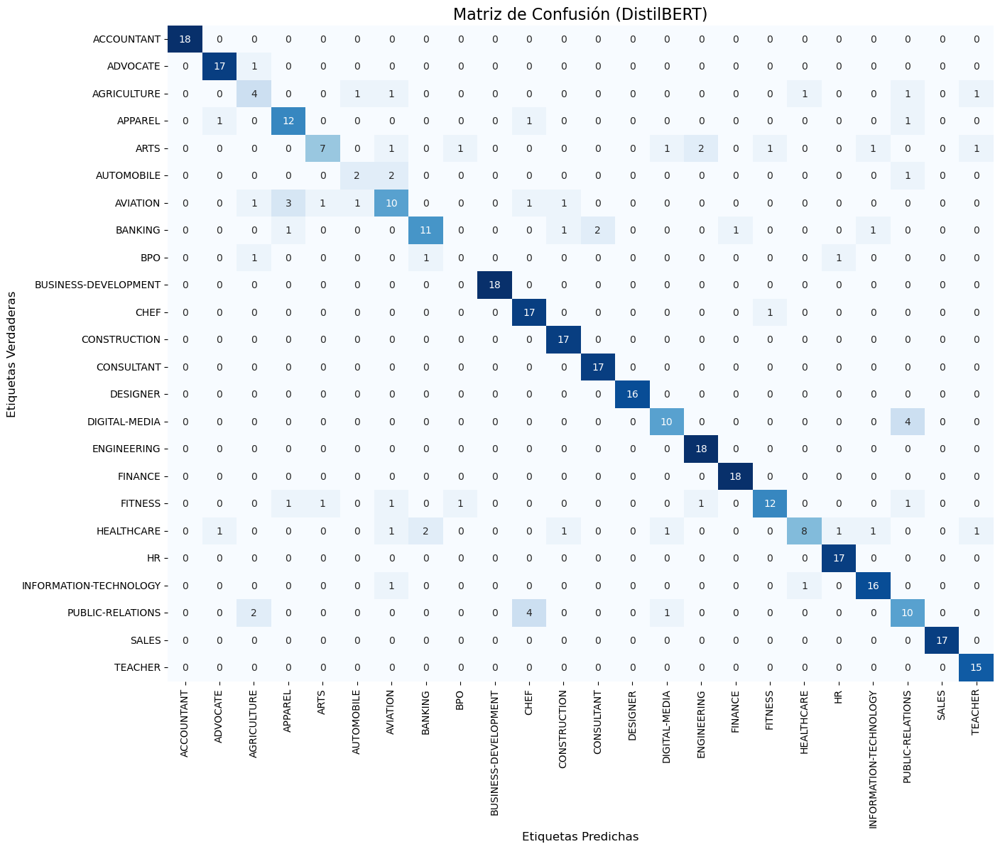
cm_distilbert = confusion_matrix(y_true_distil, y_pred_distil)
cm_normalizada_distilbert = cm_distilbert.astype('float') / cm_distilbert.sum(axis=1)[:, np.newaxis]
cm_normalizada_distilbert = np.nan_to_num(cm_normalizada_distilbert) # evitar NaN en clases sin muestras
plt.figure(figsize=(15, 12))
sns.heatmap(
cm_normalizada_distilbert,
annot=True,
fmt=".0%",
cmap="Blues",
cbar=True,
linewidths=.5,
linecolor='gray',
annot_kws={"size":10}
)
try:
plt.xticks(ticks=np.arange(len(categorias)) + 0.5,
labels=categorias, rotation=90)
plt.yticks(ticks=np.arange(len(categorias)) + 0.5,
labels=categorias, rotation=0)
except NameError:
pass
plt.xlabel("Etiquetas Predichas", fontsize=12)
plt.ylabel("Etiquetas Verdaderas", fontsize=12)
plt.title("Matriz de Confusión Normalizada (DistilBERT)", fontsize=16)
plt.savefig("cm_distilbert_normalizada.png", bbox_inches='tight')
plt.show()
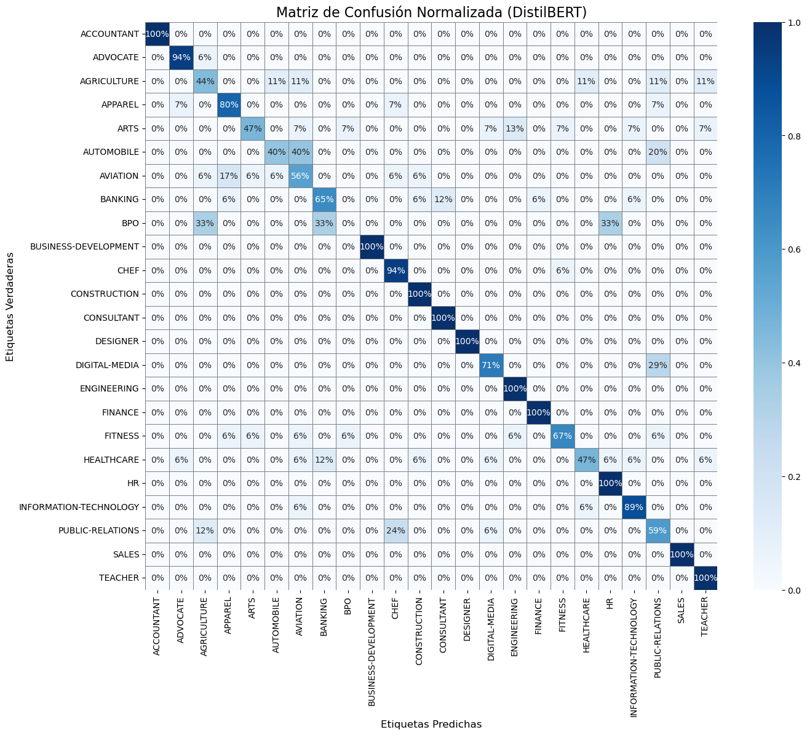
En cuanto a las matrices de confusión, se puede afirmar que el modelo tuvo un buen rendimiento en general. De las 24 categorías, 17 lograron más del 60% de clasificaciones correctas. De estas, 10 categorías alcanzaron un 100% de aciertos y 2 categorías un 94%, lo que evidencia que DistilBERT fue especialmente efectivo para un gran número de clases, aunque algunas categorías con menor representación todavía presentan oportunidades de mejora.
Cabe mencionar que para la categoría BPO, el modelo no logró acertar en ningún caso.
y_true_bin = label_binarize(y_true_distil, classes=np.arange(num_clases))
probs_matrix = y_pred_probs_distil
fpr = dict()
tpr = dict()
roc_auc = dict()
for i in range(num_clases):
fpr[i], tpr[i], _ = roc_curve(y_true_bin[:, i], probs_matrix[:, i])
roc_auc[i] = auc(fpr[i], tpr[i])
all_fpr = np.unique(np.concatenate([fpr[i] for i in range(num_clases)]))
mean_tpr = np.zeros_like(all_fpr)
for i in range(num_clases):
mean_tpr += np.interp(all_fpr, fpr[i], tpr[i])
mean_tpr /= num_clases
fpr["macro"] = all_fpr
tpr["macro"] = mean_tpr
roc_auc["macro"] = auc(fpr["macro"], tpr["macro"])
plt.style.use('seaborn-v0_8-whitegrid')
plt.figure(figsize=(12, 9))
for i in range(num_clases):
plt.plot(fpr[i], tpr[i], color='lightgray', alpha=0.3, lw=1)
plt.plot([0, 1], [0, 1], 'k--', lw=2, label='Azar (AUC = 0.50)')
plt.plot(
fpr["macro"], tpr["macro"],
label=f'Promedio MACRO (AUC = {roc_auc["macro"]:.2f})',
color='darkblue', linestyle='-', linewidth=4
)
plt.xlim([0.0, 1.0])
plt.ylim([0.0, 1.05])
plt.xlabel('Tasa de Falsos Positivos (FPR)', fontsize=14)
plt.ylabel('Tasa de Verdaderos Positivos (TPR)', fontsize=14)
plt.title('Curva ROC Promedio (MACRO) — DistilBERT', fontsize=18)
plt.legend(loc="lower right", fontsize=12, frameon=True, shadow=True)
plt.grid(True)
plt.savefig('curva_roc_general_distilbert.png', bbox_inches='tight')
plt.show()
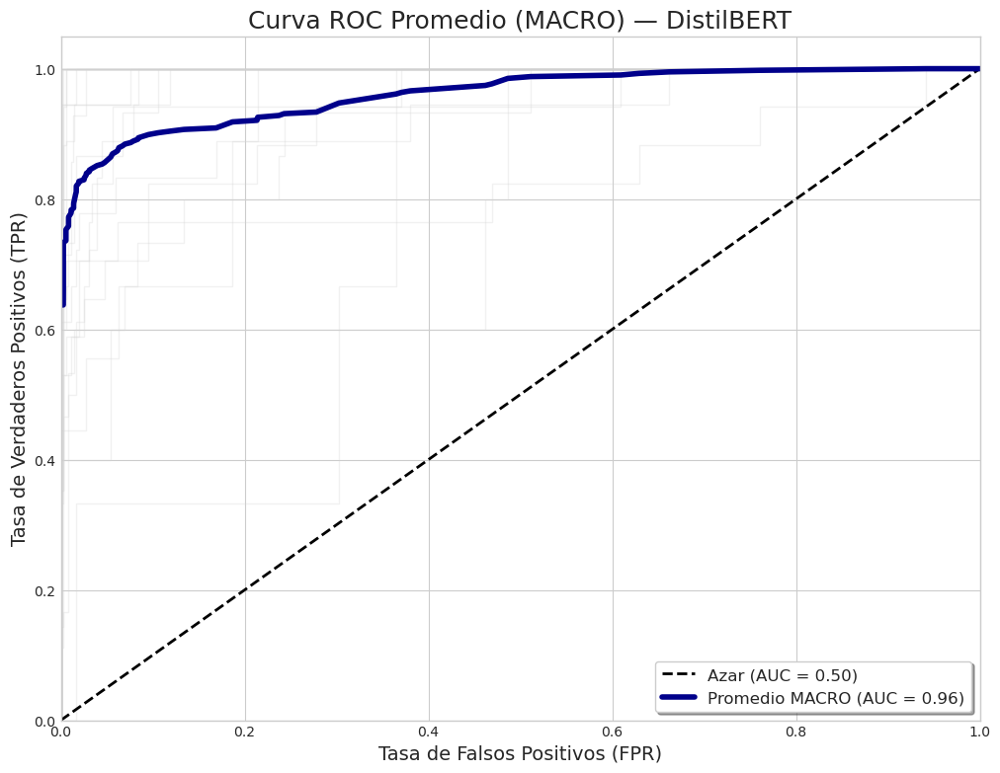
plt.figure(figsize=(18, 12))
plt.style.use('seaborn-v0_8-whitegrid')
plt.plot([0, 1], [0, 1], 'k--', lw=2, label='Azar (AUC = 0.50)')
colors = itertools.cycle(plt.cm.get_cmap('tab20c').colors)
for i, color in zip(range(num_clases), colors):
label_text = f'Clase {i}'
plt.plot(fpr[i], tpr[i], color=color, lw=2,
label=f'{label_text} (AUC = {roc_auc[i]:.2f})')
plt.xlim([0.0, 1.0])
plt.ylim([0.0, 1.05])
plt.xlabel('Tasa de Falsos Positivos (FPR)', fontsize=14)
plt.ylabel('Tasa de Verdaderos Positivos (TPR)', fontsize=14)
plt.title('Curvas ROC Multiclase por Categoría (OvR) — DistilBERT', fontsize=18)
plt.legend(loc="lower right", fontsize=9, ncol=2)
plt.grid(True)
plt.savefig('curva_roc_individual_distilbert.png', bbox_inches='tight')
plt.show()
/tmp/ipykernel_567/4180844656.py:7: MatplotlibDeprecationWarning: The get_cmap function was deprecated in Matplotlib 3.7 and will be removed in 3.11. Use ``matplotlib.colormaps[name]`` or ``matplotlib.colormaps.get_cmap()`` or ``pyplot.get_cmap()`` instead.
colors = itertools.cycle(plt.cm.get_cmap('tab20c').colors)
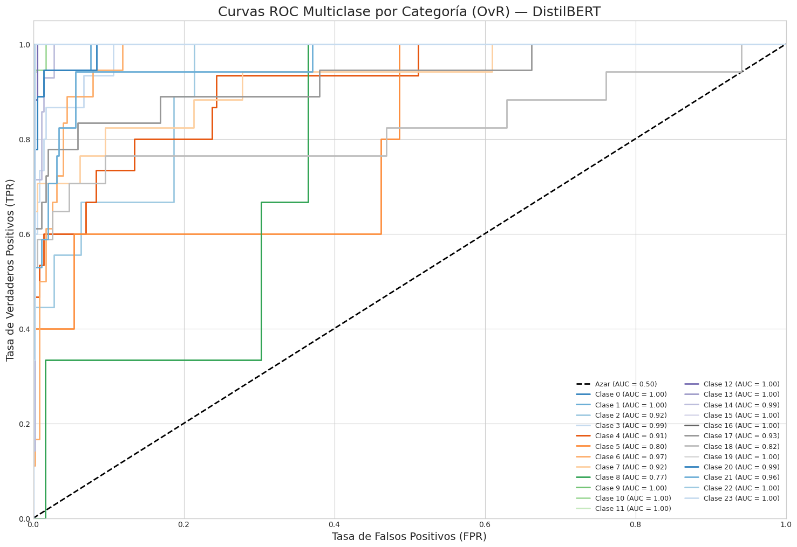
Por otro lado, la curva ROC AUC promedio de 0.96 demuestra que el modelo tiene una buena capacidad de discriminación, tal como se había mencionado anteriormente. Además, al analizar las clases de manera individual, la mayoría obtuvo valores altos de AUC, que van principalmente de 0.9 a 1, mientras que solo tres clases registraron valores menores, de 0.77, 0.8 y 0.82, mostrando que la mayoría de las categorías se predicen con alta confiabilidad.
import pickle
distilbert_info = {
"model_path": best_model_dir, # ruta al modelo DistilBERT guardado
"metrics_test": {
"Accuracy": accuracy_distil,
"Precision (Macro)": precision_distil,
"Recall (Macro)": recall_distil,
"F1-Score (Macro)": f1_distil,
"ROC AUC (Macro)": roc_auc_distil
},
"labels": {
"y_true": y_true_distil,
"y_pred": y_pred_distil
}
}
summary_path = "distilbert_summary.pkl"
with open(summary_path, "wb") as f:
pickle.dump(distilbert_info, f)
Modelo 2: Word2Vec + BiLSTM#
MAX_WORDS = 30000
MAX_SEQUENCE_LENGTH = 200
EMBEDDING_DIM = 300
W2V_PATH = "../docs/GoogleNews-vectors-negative300.bin"
tokenizer_w2v = Tokenizer(num_words=MAX_WORDS, oov_token="<unk>")
tokenizer_w2v.fit_on_texts(train_df['Resume'])
X_train_seq_w2v = tokenizer_w2v.texts_to_sequences(train_df['Resume'])
X_val_seq_w2v = tokenizer_w2v.texts_to_sequences(val_df['Resume'])
X_test_seq_w2v = tokenizer_w2v.texts_to_sequences(test_df['Resume'])
X_train_pad_w2v = pad_sequences(X_train_seq_w2v, maxlen=MAX_SEQUENCE_LENGTH, padding='post', truncating='post')
X_val_pad_w2v = pad_sequences(X_val_seq_w2v, maxlen=MAX_SEQUENCE_LENGTH, padding='post', truncating='post')
X_test_pad_w2v = pad_sequences(X_test_seq_w2v, maxlen=MAX_SEQUENCE_LENGTH, padding='post', truncating='post')
y_train_w2v = train_df['Category'].astype(int).values
y_val_w2v = val_df['Category'].astype(int).values
y_test_w2v = test_df['Category'].astype(int).values
NUM_CLASSES = len(np.unique(y_train))
y_train_ohe_w2v = to_categorical(y_train_w2v, num_classes=NUM_CLASSES)
y_val_ohe_w2v = to_categorical(y_val_w2v, num_classes=NUM_CLASSES)
y_test_ohe_w2v = to_categorical(y_test_w2v, num_classes=NUM_CLASSES)
word_index_w2v = tokenizer_w2v.word_index
num_words_vocab_w2v = num_words_vocab_w2v = min(MAX_WORDS, len(word_index_w2v) + 1)
embedding_matrix_w2v = np.zeros((num_words_vocab_w2v, EMBEDDING_DIM), dtype=np.float32)
try:
w2v_model = KeyedVectors.load_word2vec_format(W2V_PATH, binary=True, limit=500000)
for word, i in word_index_w2v.items():
if i >= num_words_vocab_w2v:
continue
if word in w2v_model:
embedding_matrix_w2v[i] = w2v_model[word]
elif word.lower() in w2v_model:
embedding_matrix_w2v[i] = w2v_model[word.lower()]
del w2v_model
except Exception as e:
print("Error al cargar Word2Vec:", e)
traceback.print_exc()
weights_w2v = class_weight.compute_class_weight(class_weight='balanced', classes=np.unique(y_train_w2v), y=y_train_w2v)
class_weights_dict_w2v = dict(zip(np.unique(y_train_w2v), weights_w2v))
def build_bilstm(params, embedding_matrix, input_length, num_classes):
model = Sequential()
model.add(Embedding(
input_dim=embedding_matrix.shape[0],
output_dim=embedding_matrix.shape[1],
weights=[embedding_matrix],
input_length=input_length,
trainable=params['embedding_trainable']
))
for layer_idx in range(params['num_lstm_layers']):
return_seq = (layer_idx < params['num_lstm_layers'] - 1)
model.add(Bidirectional(LSTM(params['lstm_units'], return_sequences=return_seq)))
model.add(Dropout(params['dropout_rate']))
model.add(Dense(64, activation='relu'))
model.add(Dropout(params['dropout_rate']))
model.add(Dense(num_classes, activation='softmax'))
opt = tf.keras.optimizers.Adam(learning_rate=params['learning_rate'])
model.compile(loss='categorical_crossentropy', optimizer=opt, metrics=['accuracy'])
return model
param_grid_w2v = {
'lstm_units': [32, 64],
'num_lstm_layers': [1, 2],
'dropout_rate': [0.3, 0.5],
'learning_rate': [0.001, 0.005],
'batch_size': [16, 32],
'epochs': [20, 50],
'embedding_trainable': [True]
}
keys, values = zip(*param_grid_w2v.items())
all_combos = [dict(zip(keys, v)) for v in itertools.product(*values)]
random.seed(21)
MAX_TRIALS = 20
combos = random.sample(all_combos, min(MAX_TRIALS, len(all_combos)))
best_val_f1_w2v, best_model_w2v, best_params_w2v = 0, None, None
results_w2v = []
for i, params in enumerate(combos, 1):
tf.keras.backend.clear_session()
model_w2vbstm = build_bilstm(params, embedding_matrix_w2v, MAX_SEQUENCE_LENGTH, NUM_CLASSES)
callbacks = [
EarlyStopping(monitor='val_loss', patience=3, restore_best_weights=True, verbose=0),
ReduceLROnPlateau(monitor='val_loss', factor=0.5, patience=2, verbose=0)
]
model_w2vbstm.fit(
X_train_pad_w2v, y_train_ohe_w2v,
validation_data=(X_val_pad_w2v, y_val_ohe_w2v),
epochs=params['epochs'],
batch_size=params['batch_size'],
class_weight=class_weights_dict_w2v,
callbacks=callbacks,
verbose=0
)
val_probs_w2v = model_w2vbstm.predict(X_val_pad_w2v, verbose=0)
val_preds_w2v = np.argmax(val_probs_w2v, axis=1)
val_f1_w2v = f1_score(y_val_w2v, val_preds_w2v, average='macro')
results_w2v.append((params, val_f1_w2v))
if val_f1_w2v > best_val_f1_w2v:
best_val_f1_w2v, best_model_w2v, best_params_w2v = val_f1_w2v, model_w2vbstm, params
model_w2vbstm.save( "best_word2vec_bilstm.h5")
display(HTML("<h4>Mejores Hiperparámetros Encontrados:</h4>"))
params_df = pd.Series(best_params_w2v, name='Valor').to_frame()
params_df.index.name = 'Hiperparámetro'
display(params_df)
Mejores Hiperparámetros Encontrados:
| Valor | |
|---|---|
| Hiperparámetro | |
| lstm_units | 64 |
| num_lstm_layers | 1 |
| dropout_rate | 0.3 |
| learning_rate | 0.001 |
| batch_size | 32 |
| epochs | 20 |
| embedding_trainable | True |
results_w2v.sort(key=lambda x: x[1], reverse=True)
best_params_w2v, best_val_f1_w2v = results_w2v[0]
final_model_w2v = tf.keras.models.load_model('best_word2vec_bilstm.h5')
seq_len_best = MAX_SEQUENCE_LENGTH
X_test_seq = X_test_pad_w2v
loss_w2v, accuracy_w2v = final_model_w2v.evaluate(X_test_seq, y_test_ohe_w2v, verbose=0)
y_pred_probs_w2v = final_model_w2v.predict(X_test_seq, verbose=0)
y_pred_w2v = np.argmax(y_pred_probs_w2v, axis=1)
y_true_w2v = y_test_w2v
accuracy_w2v_t = accuracy_score(y_true_w2v, y_pred_w2v)
precision_w2v = precision_score(y_true_w2v, y_pred_w2v, average='macro')
recall_macro_w2v = recall_score(y_true_w2v, y_pred_w2v, average='macro')
f1_macro_w2v = f1_score(y_true_w2v, y_pred_w2v, average='macro')
roc_auc_macro_w2v = roc_auc_score(y_true_w2v, y_pred_probs_w2v, multi_class='ovr', average='macro')
results_final_w2v = {
'Accuracy': accuracy_w2v_t,
'Precision (Macro)': precision_w2v,
'F1-Score (Macro)': f1_macro_w2v,
'Recall (Macro)': recall_macro_w2v,
'ROC AUC (Macro)': roc_auc_macro_w2v
}
resultados['Word2Vec + BiLSTM'] = results_w2v
df_results_w2v = pd.DataFrame.from_dict(resultados, orient='index')
df_results_w2v.index.name = 'Modelo'
display(pd.DataFrame([results_final_w2v ], index=['Word2Vec + BiLSTM']))
WARNING:absl:Compiled the loaded model, but the compiled metrics have yet to be built. `model.compile_metrics` will be empty until you train or evaluate the model.
| Accuracy | Precision (Macro) | F1-Score (Macro) | Recall (Macro) | ROC AUC (Macro) | |
|---|---|---|---|---|---|
| Word2Vec + BiLSTM | 0.756032 | 0.702512 | 0.696467 | 0.705388 | 0.945301 |
El modelo Word2Vec + BiLSTM mostró un desempeño consistente en el conjunto de prueba. Alcanzó una accuracy de 75.6% y un F1-Score macro de 69.6%, lo que indica un buen equilibrio entre precisión y recall en todas las clases. Además, su ROC AUC macro de 0.945 refleja que el modelo tiene una buena capacidad para diferenciar entre las categorías.
cm_w2v = confusion_matrix(y_true_w2v, y_pred_w2v)
plt.figure(figsize=(15, 12))
sns.heatmap(
cm_w2v,
annot=True,
fmt='d',
cmap='Blues',
cbar=False
)
try:
plt.xticks(ticks=np.arange(len(categorias)) + 0.5,
labels=categorias, rotation=90)
plt.yticks(ticks=np.arange(len(categorias)) + 0.5,
labels=categorias, rotation=0)
except NameError:
pass
plt.xlabel("Etiquetas Predichas", fontsize=12)
plt.ylabel("Etiquetas Verdaderas", fontsize=12)
plt.title("Matriz de Confusión (Word2Vec + BiLSTM)", fontsize=16)
plt.savefig('cm_conteo_w2v.png', bbox_inches='tight')
plt.show()
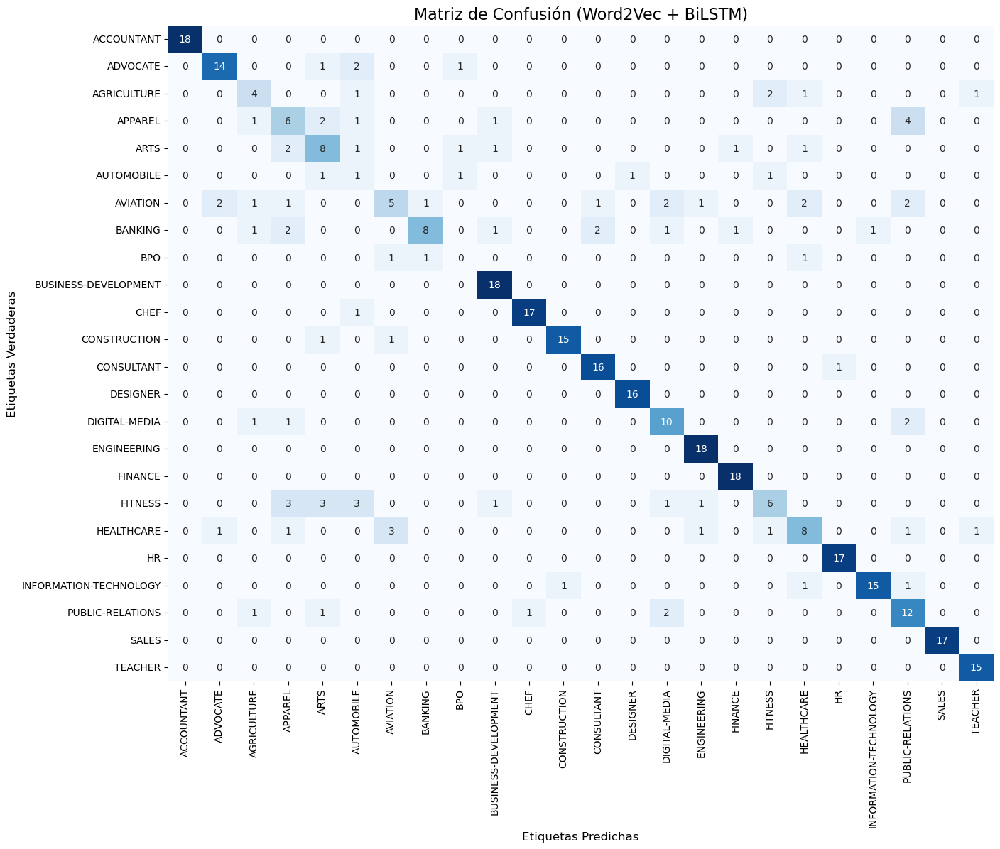
cm_normalized_w2v = cm_w2v.astype('float') / cm_w2v.sum(axis=1)[:, np.newaxis]
cm_normalized_w2v = np.nan_to_num(cm_normalized_w2v)
plt.figure(figsize=(18, 15))
sns.heatmap(
cm_normalized_w2v,
annot=True,
fmt='.0%',
cmap='Blues',
cbar=True,
linewidths=.5,
linecolor='gray',
annot_kws={"size": 10}
)
try:
plt.xticks(ticks=np.arange(len(categorias)) + 0.5,
labels=categorias, rotation=90)
plt.yticks(ticks=np.arange(len(categorias)) + 0.5,
labels=categorias, rotation=0)
except NameError:
pass
plt.xlabel("Etiquetas Predichas", fontsize=14)
plt.ylabel("Etiquetas Verdaderas", fontsize=14)
plt.title("Matriz de Confusión Normalizada (Word2Vec + BiLSTM)", fontsize=16)
plt.savefig('cm_normalizada_w2v.png', bbox_inches='tight')
plt.show()
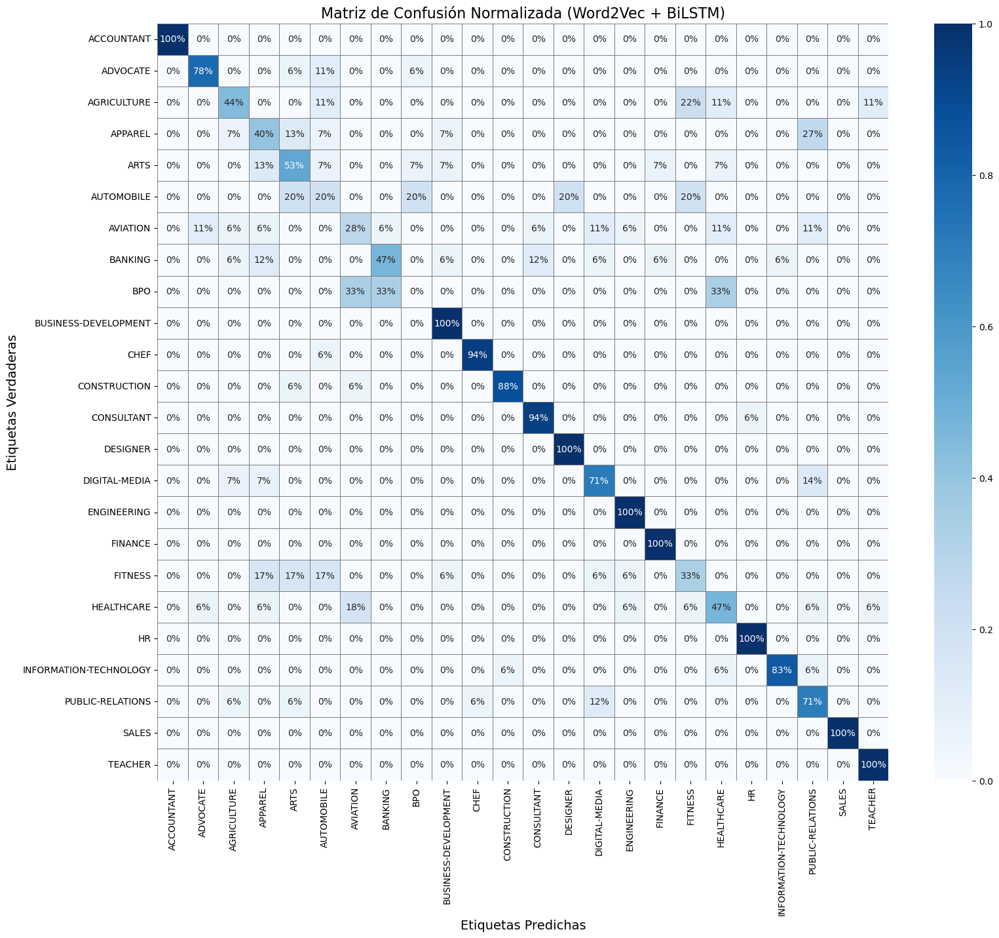
En cuanto a las matrices de confusión, se puede afirmar que el modelo tuvo un rendimiento considerable. De las 24 categorías, 15 lograron más del 60% de clasificaciones correctas; de estas, 8 alcanzaron un 100% de aciertos y 2 un 94%. Sin embargo, también se observan categorías con valores bajos en la diagonal, incluso alrededor del 20%, lo que evidencia que el modelo no siempre fue tan preciso para todas las clases. Sobretodo para BPO, para la cual no clasificó ninguna correctamente.
y_true_binarized_w2v = label_binarize(y_true_w2v, classes=np.arange(num_clases))
fpr = dict()
tpr = dict()
roc_auc = dict()
for i in range(num_clases):
fpr[i], tpr[i], _ = roc_curve(y_true_binarized_w2v[:, i], y_pred_probs_w2v[:, i])
roc_auc[i] = auc(fpr[i], tpr[i])
all_fpr = np.unique(np.concatenate([fpr[i] for i in range(num_clases)]))
mean_tpr = np.zeros_like(all_fpr)
for i in range(num_clases):
mean_tpr += np.interp(all_fpr, fpr[i], tpr[i])
mean_tpr /= num_clases
fpr["macro"] = all_fpr
tpr["macro"] = mean_tpr
roc_auc["macro"] = auc(fpr["macro"], tpr["macro"])
plt.style.use('seaborn-v0_8-whitegrid')
plt.figure(figsize=(12, 9))
for i in range(num_clases):
plt.plot(fpr[i], tpr[i],
color='lightgray',
alpha=0.3,
lw=1)
plt.plot([0, 1], [0, 1], 'k--', lw=2, label='Azar (AUC = 0.50)')
plt.plot(
fpr["macro"],
tpr["macro"],
label=f'Promedio MACRO (AUC = {roc_auc["macro"]:.2f})',
color='darkblue',
linestyle='-',
linewidth=4
)
plt.xlim([0.0, 1.0])
plt.ylim([0.0, 1.05])
plt.xlabel('Tasa de Falsos Positivos (FPR)', fontsize=14)
plt.ylabel('Tasa de Verdaderos Positivos (TPR)', fontsize=14)
plt.title('Curvas ROC (OvR) para Word2Vec + BiLSTIM', fontsize=18)
plt.legend(loc="lower right", fontsize=12, frameon=True, shadow=True)
plt.grid(True)
plt.savefig('curva_roc_general_w2v.png', bbox_inches='tight')
plt.show()
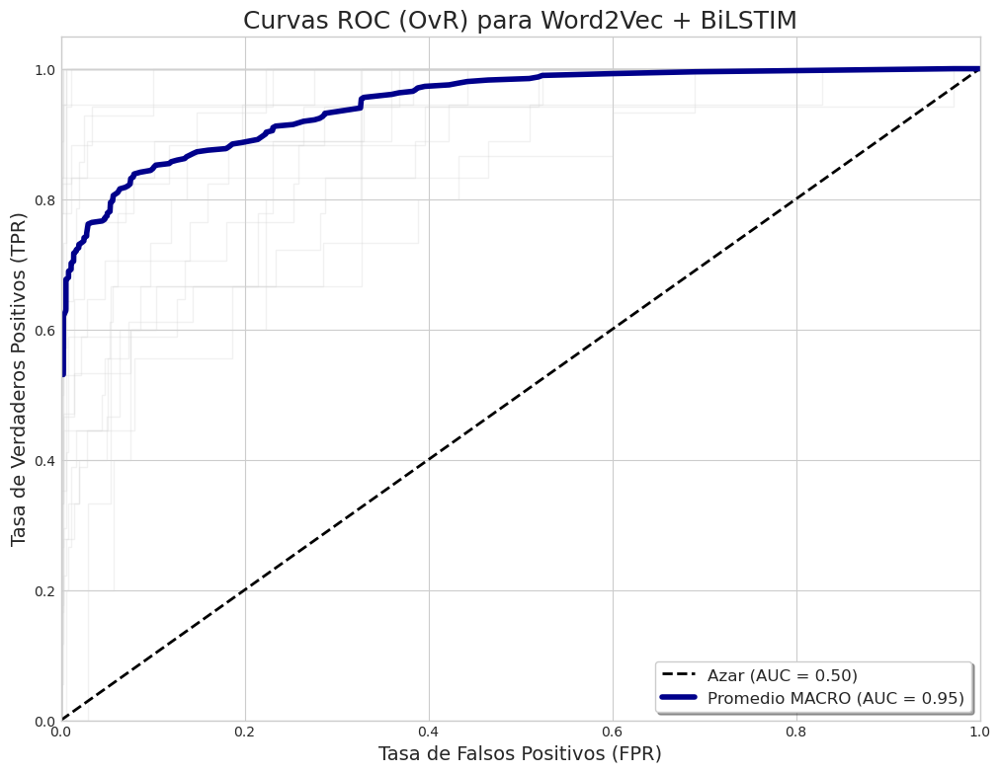
for i in range(num_clases):
fpr[i], tpr[i], _ = roc_curve(y_true_binarized_w2v[:, i], y_pred_probs_w2v[:, i])
roc_auc[i] = auc(fpr[i], tpr[i])
plt.figure(figsize=(18, 12))
colors = itertools.cycle(plt.cm.get_cmap('tab20c').colors)
plt.style.use('seaborn-v0_8-whitegrid')
plt.plot([0, 1], [0, 1], 'k--', lw=2, label='Azar (AUC = 0.50)')
for i, color in zip(range(num_clases), colors):
try:
label_text = categorias[i]
except (NameError, IndexError):
label_text = f'Clase {i}'
plt.plot(fpr[i], tpr[i], color=color, lw=2,
label=f'{label_text} (AUC = {roc_auc[i]:.2f})')
plt.xlim([0.0, 1.0])
plt.ylim([0.0, 1.05])
plt.xlabel('Tasa de Falsos Positivos (FPR)', fontsize=14)
plt.ylabel('Tasa de Verdaderos Positivos (TPR)', fontsize=14)
plt.title('Curvas ROC Multiclase por Categoría (OvR) para Word2Vec', fontsize=18)
plt.legend(loc="lower right", fontsize=9, ncol=2)
plt.grid(True)
plt.savefig('curva_roc_indvidual_w2v.png', bbox_inches='tight')
plt.show()
/tmp/ipykernel_2002/2325955554.py:7: MatplotlibDeprecationWarning: The get_cmap function was deprecated in Matplotlib 3.7 and will be removed in 3.11. Use ``matplotlib.colormaps[name]`` or ``matplotlib.colormaps.get_cmap()`` or ``pyplot.get_cmap()`` instead.
colors = itertools.cycle(plt.cm.get_cmap('tab20c').colors)
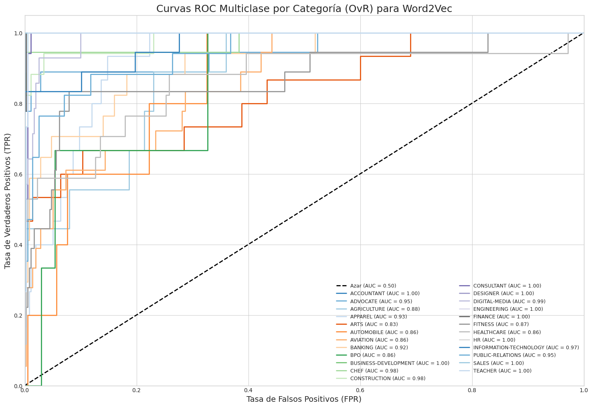
Por otra parte, la curva ROC AUC promedio de 0.95 indica que el modelo posee una buena capacidad para distinguir entre las diferentes clases. Al evaluar las clases de forma individual, la mayoría mostró valores de AUC altos, que van de 0.83 a 1, lo que refleja que la mayoría de las categorías se clasifican con un nivel elevado de confiabilidad.
model_path_w2v = "best_word2vec_bilstm.h5"
best_model_w2v.save(model_path_w2v)
word2vec_info = {
"model_path": model_path_w2v,
"best_params": best_params_w2v,
"metrics_test": {
"Accuracy": accuracy_w2v_t,
"Precision (Macro)": precision_w2v,
"Recall (Macro)": recall_macro_w2v,
"F1-Score (Macro)": f1_macro_w2v,
"ROC AUC (Macro)": roc_auc_macro_w2v
},
# Etiquetas reales vs predichas
"labels": {
"y_true": y_test_w2v.tolist() if hasattr(y_test_w2v, 'tolist') else y_test_w2v,
"y_pred": y_pred_w2v.tolist() if hasattr(y_pred_w2v, 'tolist') else y_pred_w2v
}
}
summary_path_w2v = "word2vec_info.pkl"
with open(summary_path_w2v, "wb") as f:
pickle.dump(word2vec_info, f, protocol=pickle.HIGHEST_PROTOCOL)
WARNING:absl:You are saving your model as an HDF5 file via `model.save()` or `keras.saving.save_model(model)`. This file format is considered legacy. We recommend using instead the native Keras format, e.g. `model.save('my_model.keras')` or `keras.saving.save_model(model, 'my_model.keras')`.
Modelo 3: CNN-1D#
max_words_cnn = 30000
max_sequence_length_cnn = 200
embedding_dim_cnn = 100
tokenizer_cnn = Tokenizer(num_words=max_words_cnn, oov_token="<unk>")
tokenizer_cnn.fit_on_texts(X_train)
word_index_cnn = tokenizer_cnn.word_index
num_words_vocab_cnn = min(max_words_cnn, len(word_index_cnn) + 1)
seq_train_cnn = tokenizer_cnn.texts_to_sequences(X_train)
seq_val_cnn = tokenizer_cnn.texts_to_sequences(X_val)
seq_test_cnn = tokenizer_cnn.texts_to_sequences(X_test)
X_train_pad_cnn = pad_sequences(seq_train_cnn, maxlen=max_sequence_length_cnn, padding='post', truncating='post')
X_val_pad_cnn = pad_sequences(seq_val_cnn, maxlen=max_sequence_length_cnn, padding='post', truncating='post')
X_test_pad_cnn = pad_sequences(seq_test_cnn, maxlen=max_sequence_length_cnn, padding='post', truncating='post')
glove_path = "../docs/wiki_giga_2024_100_MFT20_vectors_seed_2024_alpha_0.75_eta_0.05.050_combined.txt"
embeddings_index_cnn = {}
try:
with open(glove_path, encoding="utf8") as f:
for line in f:
values = line.rstrip().split(" ")
word = values[0]
coeffs = np.asarray(values[1:], dtype="float32")
embeddings_index_cnn[word] = coeffs
except Exception as e:
print(f"Error al cargar GloVe: {e}")
embedding_matrix_cnn = np.zeros((num_words_vocab_cnn, embedding_dim_cnn), dtype=np.float32)
for word, i in word_index_cnn.items():
if i >= num_words_vocab_cnn:
continue
vector = embeddings_index_cnn.get(word)
if vector is not None:
embedding_matrix_cnn[i] = vector
def build_cnn_model(embedding_matrix_cnn, num_classes_cnn, max_sequence_length_cnn, hp):
filters = hp['num_filters']
kernel_size = hp['kernel_size']
dropout_rate = hp['dropout_rate']
lr = hp['learning_rate']
input_layer = Input(shape=(max_sequence_length_cnn,), dtype='int32')
embedding_layer = Embedding(
input_dim=embedding_matrix_cnn.shape[0],
output_dim=embedding_matrix_cnn.shape[1],
weights=[embedding_matrix_cnn],
input_length=max_sequence_length_cnn,
trainable=True
)(input_layer)
conv_blocks = []
for ks in [kernel_size, kernel_size + 1, kernel_size + 2]:
conv = Conv1D(filters=filters, kernel_size=ks, activation='relu')(embedding_layer)
pool = GlobalMaxPooling1D()(conv)
conv_blocks.append(pool)
concatenated = concatenate(conv_blocks)
dense_1 = Dense(filters * 2, activation='relu')(concatenated)
dropout_1 = Dropout(dropout_rate)(dense_1)
output_layer = Dense(num_classes_cnn, activation='softmax')(dropout_1)
model = Model(inputs=input_layer, outputs=output_layer)
model.compile(loss='sparse_categorical_crossentropy',
optimizer=Adam(learning_rate=lr),
metrics=['accuracy'])
return model
param_grid_cnn = {
'num_filters': [64, 128, 256],
'kernel_size': [3, 5],
'dropout_rate': [0.3, 0.5],
'learning_rate': [0.001, 0.005],
'batch_size': [32, 64],
'epochs': [50, 100]
}
keys, values = zip(*param_grid_cnn.items())
all_combinations = [dict(zip(keys, v)) for v in itertools.product(*values)]
random.seed(21)
MAX_TRIALS = 30
combos = random.sample(all_combinations, min(MAX_TRIALS, len(all_combinations)))
best_val_f1_cnn = 0
best_model_cnn = None
best_params_cnn = None
model_save_path_cnn = 'cnn1d_glove_best.h5'
for i, params in enumerate(combos, 1):
model_cnn = build_cnn_model(embedding_matrix_cnn, num_clases, max_sequence_length_cnn, params)
callbacks = [
EarlyStopping(monitor='val_loss', patience=5, restore_best_weights=True, verbose=0),
ReduceLROnPlateau(monitor='val_loss', factor=0.5, patience=2, verbose=0)
]
history = model_cnn.fit(
X_train_pad_cnn, y_train,
validation_data=(X_val_pad_cnn, y_val),
epochs=params['epochs'],
batch_size=params['batch_size'],
callbacks=callbacks,
verbose=0
)
y_pred_probs_cnn_v = model_cnn.predict(X_val_pad_cnn, verbose=0)
y_pred_classes_cnn = np.argmax(y_pred_probs_cnn_v, axis=1)
val_f1_cnn = f1_score(y_val, y_pred_classes_cnn, average='macro', zero_division=0)
if val_f1_cnn > best_val_f1_cnn:
best_val_f1_cnn = val_f1_cnn
best_model_cnn = model_cnn
best_params_cnn = params
best_model_cnn.save(model_save_path_cnn)
display(HTML("<h4>Mejores Hiperparámetros Encontrados:</h4>"))
params_df = pd.Series(best_params_cnn, name='Valor').to_frame()
params_df.index.name = 'Hiperparámetro'
display(params_df)
Mejores Hiperparámetros Encontrados:
| Valor | |
|---|---|
| Hiperparámetro | |
| num_filters | 256.000 |
| kernel_size | 3.000 |
| dropout_rate | 0.300 |
| learning_rate | 0.001 |
| batch_size | 64.000 |
| epochs | 100.000 |
final_cnn_model = load_model(model_save_path_cnn)
X_test_seq_cnn = X_test_pad_cnn
y_true_cnn = y_test
y_pred_probs_cnn = final_cnn_model.predict(X_test_seq_cnn, verbose=0)
y_pred_cnn = np.argmax(y_pred_probs_cnn, axis=1)
accuracy_cnn = accuracy_score(y_true_cnn, y_pred_cnn)
f1_macro_cnn = f1_score(y_true_cnn, y_pred_cnn, average='macro', zero_division=0)
recall_macro_cnn = recall_score(y_true_cnn, y_pred_cnn, average='macro', zero_division=0)
precision_macro_cnn = precision_score(y_true_cnn, y_pred_cnn, average='macro', zero_division=0)
roc_auc_macro_cnn = roc_auc_score(y_true_cnn, y_pred_probs_cnn, multi_class='ovr', average='macro')
results_cnn = {
'Accuracy': accuracy_cnn,
'Precision (Macro)': precision_macro_cnn,
'F1-Score (Macro)': f1_macro_cnn,
'Recall (Macro)': recall_macro_cnn,
'ROC AUC (Macro)': roc_auc_macro_cnn
}
resultados['CNN-1D'] = results_cnn
df_results_cnn = pd.DataFrame.from_dict(resultados, orient='index')
df_results_cnn.index.name = 'Modelo'
display(pd.DataFrame([results_cnn], index=['CNN-1D']))
WARNING:absl:Compiled the loaded model, but the compiled metrics have yet to be built. `model.compile_metrics` will be empty until you train or evaluate the model.
| Accuracy | Precision (Macro) | F1-Score (Macro) | Recall (Macro) | ROC AUC (Macro) | |
|---|---|---|---|---|---|
| CNN-1D | 0.788204 | 0.7643 | 0.739106 | 0.740643 | 0.960109 |
El modelo CNN-1D mostró un desempeño consistente en el conjunto de prueba, con una accuracy de 0.7882. Su F1-Score macro de 0.7391 indica un equilibrio sólido entre precisión y recall a lo largo de todas las categorías. Además, el ROC AUC macro de 0.9601 refleja que el modelo logra diferenciar correctamente entre la mayoría de clases, mostrando confiabilidad incluso en aquellas con menor representación.
cm_cnn = confusion_matrix(y_true_cnn, y_pred_cnn)
plt.figure(figsize=(15, 12))
sns.heatmap(
cm_cnn,
annot=True,
fmt='d',
cmap='Blues',
cbar=False
)
try:
plt.xticks(ticks=np.arange(len(categorias)) + 0.5,
labels=categorias, rotation=90)
plt.yticks(ticks=np.arange(len(categorias)) + 0.5,
labels=categorias, rotation=0)
except NameError:
pass
plt.xlabel("Etiquetas Predichas", fontsize=12)
plt.ylabel("Etiquetas Verdaderas", fontsize=12)
plt.title("Matriz de Confusión (CNN-1d)", fontsize=16)
plt.savefig('cm_conteo_cnn.png', bbox_inches='tight')
plt.show()
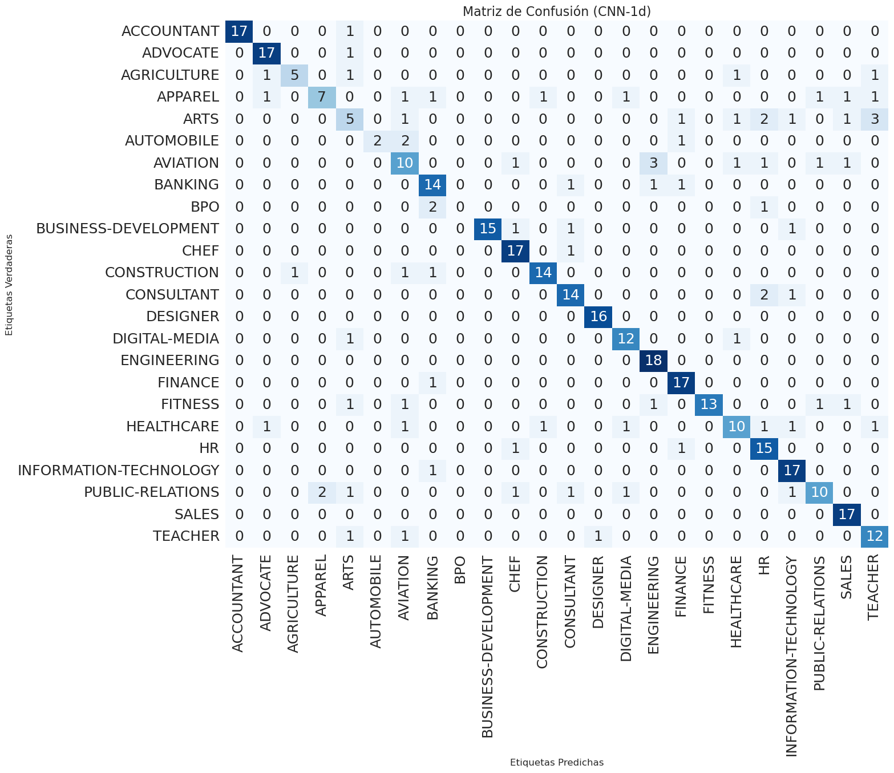
cm_normalized_cnn = cm_cnn.astype('float') / cm_cnn.sum(axis=1)[:, np.newaxis]
cm_normalized_cnn = np.nan_to_num(cm_normalized_cnn)
plt.figure(figsize=(18, 15))
sns.heatmap(
cm_normalized_cnn,
annot=True,
fmt='.0%',
cmap='Blues',
cbar=True,
linewidths=.5,
linecolor='gray',
annot_kws={"size": 10}
)
try:
plt.xticks(ticks=np.arange(len(categorias)) + 0.5,
labels=categorias, rotation=90)
plt.yticks(ticks=np.arange(len(categorias)) + 0.5,
labels=categorias, rotation=0)
except NameError:
pass
plt.xlabel("Etiquetas Predichas", fontsize=14)
plt.ylabel("Etiquetas Verdaderas", fontsize=14)
plt.title("Matriz de Confusión Normalizada (CNN-1d)", fontsize=16)
plt.savefig('cm_normalizada_cnn.png', bbox_inches='tight')
plt.show()
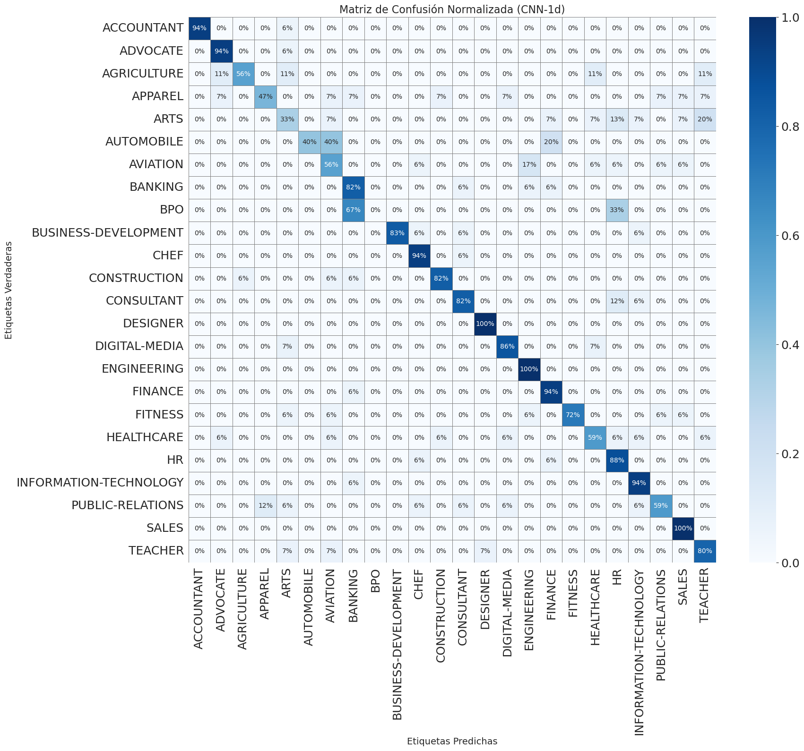
Analizando las matrices de confusión, se puede ver que el modelo alcanzó un desempeño notable en general. De las 24 categorías, 16 lograron superar el 60% de clasificaciones correctas; dentro de estas, 3 lograron un 100% de aciertos y 5 un 94%, mientras que varias otras superaron el 80%. Aun así, algunas clases presentan valores bajos en la diagonal, lo que indica que el modelo no siempre logró predecir correctamente todas las categorías.
y_true_binarized_cnn = label_binarize(y_true_cnn, classes=np.arange(num_clases))
fpr = dict()
tpr = dict()
roc_auc = dict()
for i in range(num_clases):
fpr[i], tpr[i], _ = roc_curve(y_true_binarized_cnn[:, i], y_pred_probs_cnn[:, i])
roc_auc[i] = auc(fpr[i], tpr[i])
all_fpr = np.unique(np.concatenate([fpr[i] for i in range(num_clases)]))
mean_tpr = np.zeros_like(all_fpr)
for i in range(num_clases):
mean_tpr += np.interp(all_fpr, fpr[i], tpr[i])
mean_tpr /= num_clases
fpr["macro"] = all_fpr
tpr["macro"] = mean_tpr
roc_auc["macro"] = auc(fpr["macro"], tpr["macro"])
plt.style.use('seaborn-v0_8-whitegrid')
plt.figure(figsize=(12, 9))
for i in range(num_clases):
plt.plot(fpr[i], tpr[i],
color='lightgray',
alpha=0.3,
lw=1)
plt.plot([0, 1], [0, 1], 'k--', lw=2, label='Azar (AUC = 0.50)')
plt.plot(
fpr["macro"],
tpr["macro"],
label=f'Promedio MACRO (AUC = {roc_auc["macro"]:.2f})',
color='darkblue',
linestyle='-',
linewidth=4
)
plt.xlim([0.0, 1.0])
plt.ylim([0.0, 1.05])
plt.xlabel('Tasa de Falsos Positivos (FPR)', fontsize=14)
plt.ylabel('Tasa de Verdaderos Positivos (TPR)', fontsize=14)
plt.title('Curvas ROC (OvR) para CNN-1D', fontsize=18)
plt.legend(loc="lower right", fontsize=12, frameon=True, shadow=True)
plt.grid(True)
plt.savefig('curva_roc_general_cnn.png', bbox_inches='tight')
plt.show()
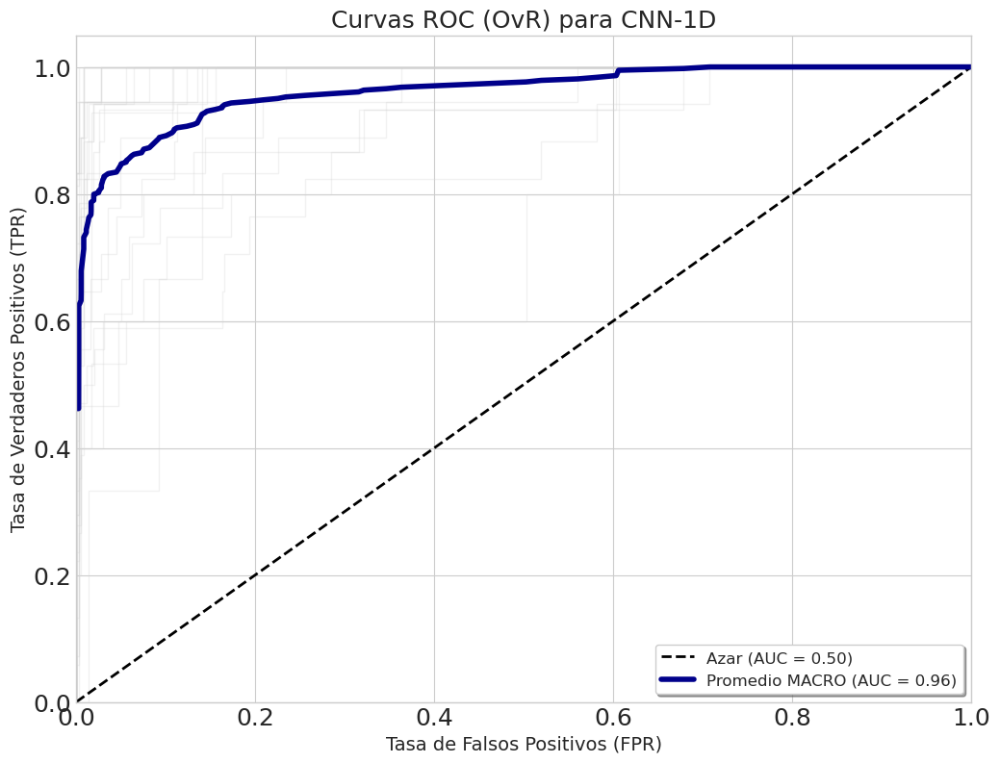
for i in range(num_clases):
fpr[i], tpr[i], _ = roc_curve(y_true_binarized_cnn[:, i], y_pred_probs_cnn[:, i])
roc_auc[i] = auc(fpr[i], tpr[i])
plt.figure(figsize=(18, 12))
colors = itertools.cycle(plt.cm.get_cmap('tab20c').colors)
plt.style.use('seaborn-v0_8-whitegrid')
plt.plot([0, 1], [0, 1], 'k--', lw=2, label='Azar (AUC = 0.50)')
for i, color in zip(range(num_clases), colors):
try:
label_text = categorias[i]
except (NameError, IndexError):
label_text = f'Clase {i}'
plt.plot(fpr[i], tpr[i], color=color, lw=2,
label=f'{label_text} (AUC = {roc_auc[i]:.2f})')
plt.xlim([0.0, 1.0])
plt.ylim([0.0, 1.05])
plt.xlabel('Tasa de Falsos Positivos (FPR)', fontsize=14)
plt.ylabel('Tasa de Verdaderos Positivos (TPR)', fontsize=14)
plt.title('Curvas ROC Multiclase por Categoría (OvR) para CNN-1D', fontsize=18)
plt.legend(loc="lower right", fontsize=9, ncol=2)
plt.grid(True)
plt.savefig('curva_roc_indvidual_cnn.png', bbox_inches='tight')
plt.show()
/tmp/ipykernel_544/3976899773.py:7: MatplotlibDeprecationWarning: The get_cmap function was deprecated in Matplotlib 3.7 and will be removed in 3.11. Use ``matplotlib.colormaps[name]`` or ``matplotlib.colormaps.get_cmap()`` or ``pyplot.get_cmap()`` instead.
colors = itertools.cycle(plt.cm.get_cmap('tab20c').colors)
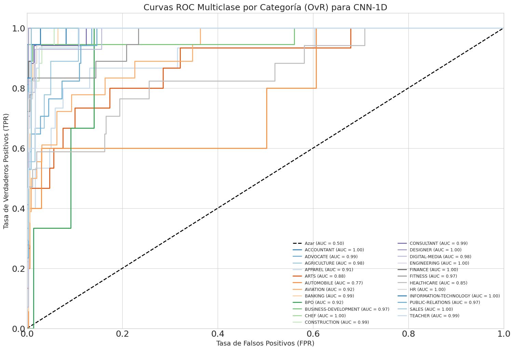
Además, la curva ROC AUC promedio de 0.96 muestra que el modelo tiene una excelente capacidad para distinguir entre las distintas clases. Al analizar las categorías de manera individual, se observa que incluso la clase con menor desempeño alcanza un AUC de 0.85, mientras que la mayoría se aproxima a 1, lo que indica que el modelo predice la gran mayoría de las categorías con un nivel muy alto de confiabilidad.
cnn_info = {
'model_object': best_model_cnn,
'tokenizer': tokenizer_cnn,
'embedding_matrix_shape': embedding_matrix_cnn.shape,
'metrics_test': {
'Accuracy': accuracy_cnn,
'F1_Macro': f1_macro_cnn,
'Recall_Macro': recall_macro_cnn,
'Precision_Macro': precision_macro_cnn,
'ROC_AUC_Macro': roc_auc_macro_cnn,
},
'best_params_used': best_params_cnn,
'best_val_f1_macro': best_val_f1_cnn,
'predictions_test': {
'y_true_test': y_true_cnn.tolist(),
'y_pred_test': y_pred_cnn.tolist(),
'y_proba_test': y_pred_probs_cnn.tolist(),
}
}
file_name = 'cnn_info.pkl'
try:
with open(file_name, 'wb') as file:
pickle.dump(cnn_info, file)
except Exception as e:
print(f"Ocurrió un error al guardar el archivo: {e}")
Modelo 4: TF-IDF + XGBoost#
num_clases_xgb = len(np.unique(y_train))
vectorizer_xgb = TfidfVectorizer(
max_features=30000,
ngram_range=(1, 3),
min_df=1,
max_df=0.8,
sublinear_tf=True
)
X_train_vect_xgb = vectorizer_xgb.fit_transform(X_train)
X_val_vect_xgb = vectorizer_xgb.transform(X_val)
X_test_vect_xgb = vectorizer_xgb.transform(X_test)
y_val_bin_xgb = to_categorical(y_val, num_classes=num_clases_xgb)
class MetricsCallback(TrainingCallback):
def __init__(self, dval, y_val, y_val_bin):
self.dval = dval
self.y_val = y_val
self.y_val_bin = y_val_bin
self.history = []
def after_iteration(self, model, epoch, evals_log):
probs = model.predict(self.dval)
preds = np.argmax(probs, axis=1)
f1_macro = f1_score(self.y_val, preds, average='macro', zero_division=0)
try:
roc_auc = roc_auc_score(self.y_val_bin, probs, multi_class='ovr', average='macro')
except ValueError:
roc_auc = np.nan
self.history.append({'Epoch': epoch, 'F1-Macro': f1_macro, 'ROC-AUC': roc_auc})
return False
dtrain_xgb = xgb.DMatrix(X_train_vect_xgb, label=y_train)
dval_xgb = xgb.DMatrix(X_val_vect_xgb, label=y_val)
dtest_xgb = xgb.DMatrix(X_test_vect_xgb, label=y_test)
base_params_xgb = {
"tree_method": "hist",
"device": "cuda",
"predictor": "gpu_predictor",
"objective": "multi:softprob",
"num_class": num_clases_xgb,
"eval_metric": "mlogloss",
"random_state": 21
}
param_grid_xgb = {
'learning_rate': [0.05, 0.1],
'max_depth': [6, 8, 10],
'subsample': [0.8, 1.0],
'colsample_bytree': [0.8, 1.0],
'gamma': [0, 0.1, 0.2],
'num_boost_round': [200, 400]
}
keys, values = zip(*param_grid_xgb.items())
all_combinations = [dict(zip(keys, v)) for v in itertools.product(*values)]
random.seed(21)
MAX_TRIALS = 30
combinations_to_run = random.sample(all_combinations, min(MAX_TRIALS, len(all_combinations)))
best_val_f1_xgb, best_model_xgb, best_params_xgb = 0, None, None
results_xgb = []
for params in combinations_to_run:
num_rounds = params.pop('num_boost_round')
current_params = base_params_xgb.copy()
current_params.update(params)
callback_metrics = MetricsCallback(dval_xgb, y_val, y_val_bin_xgb)
model_xgb = xgb.train(
current_params,
dtrain_xgb,
num_boost_round=num_rounds,
evals=[(dval_xgb, 'validation')],
callbacks=[callback_metrics],
early_stopping_rounds=30,
verbose_eval=False
)
history_df = pd.DataFrame(callback_metrics.history)
if not history_df.empty:
val_f1 = history_df['F1-Macro'].max()
results_xgb.append({**params, 'num_boost_round': num_rounds, 'F1-Macro': val_f1})
if val_f1 > best_val_f1_xgb:
best_val_f1_xgb = val_f1
best_model_xgb = model_xgb
best_params_xgb = params.copy()
best_model_xgb.save_model('best_tfidfxgb.json')
best_params_xgb['best_iteration'] = model_xgb.best_iteration
else:
print("Entrenamiento fallido o sin registros de métricas.")
display(HTML("<h4>Mejores Hiperparámetros Encontrados:</h4>"))
params_df = pd.Series(best_params_xgb, name='Valor').to_frame()
params_df.index.name = 'Hiperparámetro'
display(params_df)
Mejores Hiperparámetros Encontrados:
| Valor | |
|---|---|
| Hiperparámetro | |
| learning_rate | 0.05 |
| max_depth | 8.00 |
| subsample | 0.80 |
| colsample_bytree | 0.80 |
| gamma | 0.20 |
| best_iteration | 306.00 |
final_model_xgb = xgb.Booster()
final_model_xgb.load_model('best_tfidfxgb.json')
y_pred_probs_xgb = final_model_xgb.predict(dtest_xgb)
y_pred_xgb = np.argmax(y_pred_probs_xgb, axis=1)
y_true_xgb = y_test
accuracy_xgb = accuracy_score(y_true_xgb, y_pred_xgb)
f1_macro_xgb = f1_score(y_true_xgb, y_pred_xgb, average='macro', zero_division=0)
recall_macro_xgb = recall_score(y_true_xgb, y_pred_xgb, average='macro', zero_division=0)
precision_macro_xgb = precision_score(y_true_xgb, y_pred_xgb, average='macro', zero_division=0)
roc_auc_macro_xgb = roc_auc_score(y_true_xgb, y_pred_probs_xgb, multi_class='ovr', average='macro')
results_xgb = {
'Accuracy': accuracy_xgb,
'Precision (Macro)': precision_macro_xgb,
'F1-Score (Macro)': f1_macro_xgb,
'Recall (Macro)': recall_macro_xgb,
'ROC AUC (Macro)': roc_auc_macro_xgb
}
resultados['TF-IDF + XGBoost'] = results_xgb
df_results_xgb = pd.DataFrame.from_dict(resultados, orient='index')
df_results_xgb.index.name = 'Modelo'
display(df_results_xgb.loc[['TF-IDF + XGBoost']])
| Accuracy | Precision (Macro) | F1-Score (Macro) | Recall (Macro) | ROC AUC (Macro) | |
|---|---|---|---|---|---|
| Modelo | |||||
| TF-IDF + XGBoost | 0.825737 | 0.79144 | 0.777748 | 0.78068 | 0.9822 |
El modelo TF-IDF + XGBoost demostró ser muy efectivo para la tarea de clasificación. Con una accuracy de 0.8257, logró mantener un buen desempeño general en la mayoría de categorías. Su F1-Score macro de 0.7777 refleja un equilibrio consistente entre precisión y recall, mientras que el ROC AUC macro de 0.9822 indica que es altamente capaz de distinguir entre las diferentes clases, mostrando un nivel de confiabilidad superior en las predicciones. En conjunto, estos resultados sugieren que el modelo no solo acierta con frecuencia, sino que también maneja bien la discriminación entre categorías incluso en casos más desafiantes.
cm_xgb = confusion_matrix(y_true_xgb, y_pred_xgb)
plt.figure(figsize=(15, 12))
sns.heatmap(
cm_xgb,
annot=True,
fmt='d',
cmap='Blues',
cbar=False
)
try:
plt.xticks(ticks=np.arange(len(categorias)) + 0.5,
labels=categorias, rotation=90)
plt.yticks(ticks=np.arange(len(categorias)) + 0.5,
labels=categorias, rotation=0)
except NameError:
pass
plt.xlabel("Etiquetas Predichas", fontsize=12)
plt.ylabel("Etiquetas Verdaderas", fontsize=12)
plt.title("Matriz de Confusión (TF-IDF + XGBoost)", fontsize=16)
plt.savefig('best_cm_conteo_xgb.png', bbox_inches='tight')
plt.show()
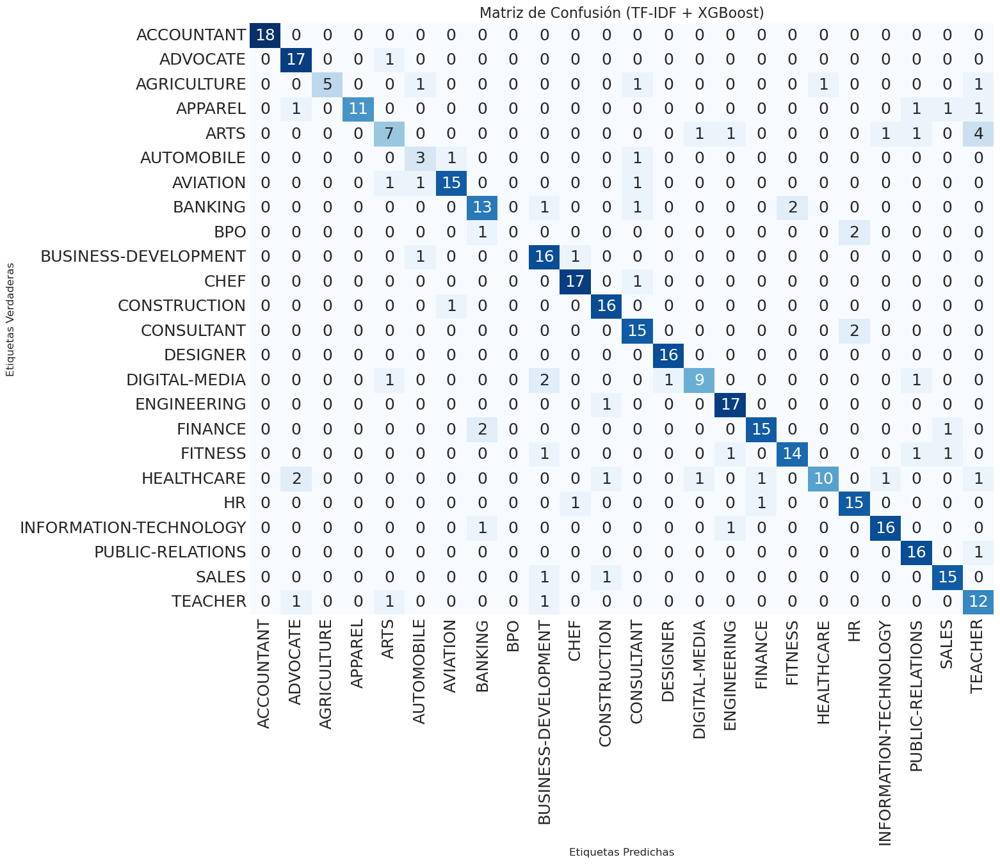
cm_normalized_xgb = cm_xgb.astype('float') / cm_xgb.sum(axis=1)[:, np.newaxis]
cm_normalized_xgb = np.nan_to_num(cm_normalized_xgb)
plt.figure(figsize=(18, 15))
sns.heatmap(
cm_normalized_xgb,
annot=True,
fmt='.0%',
cmap='Blues',
cbar=True,
linewidths=.5,
linecolor='gray',
annot_kws={"size": 10}
)
try:
plt.xticks(ticks=np.arange(len(categorias)) + 0.5,
labels=categorias, rotation=90)
plt.yticks(ticks=np.arange(len(categorias)) + 0.5,
labels=categorias, rotation=0)
except NameError:
pass
plt.xlabel("Etiquetas Predichas", fontsize=14)
plt.ylabel("Etiquetas Verdaderas", fontsize=14)
plt.title("Matriz de Confusión Normalizada (TF-IDF + XGBoost)", fontsize=16)
plt.savefig('cm_normalizada_xgb.png', bbox_inches='tight')
plt.show()
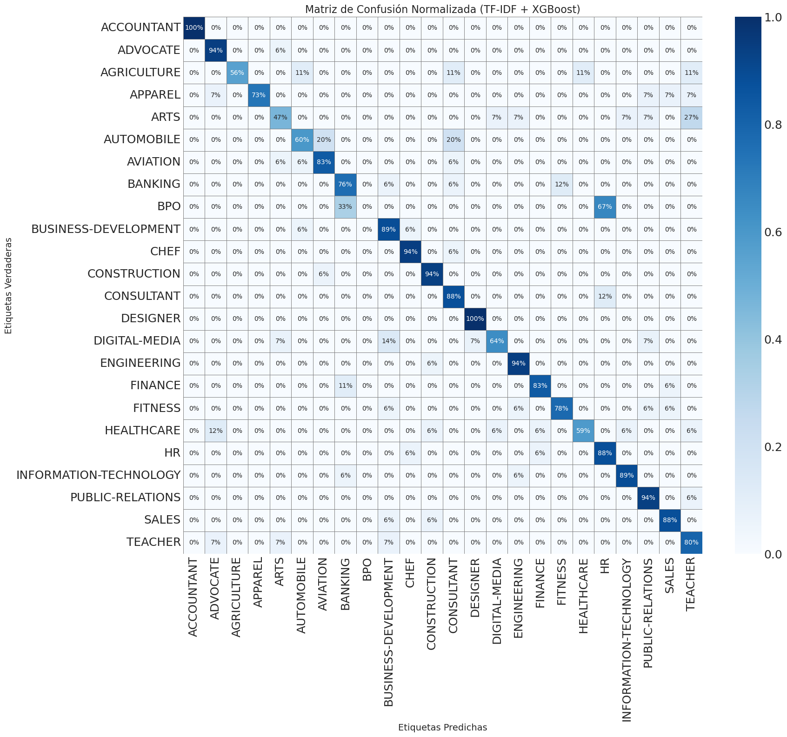
Observando la matriz de confusión, se evidencia que el modelo mostró un desempeño sólido en términos generales. De las 24 categorías, 20 superaron el 60% de aciertos, con 2 alcanzando 100% y 5 llegando a 94%, mientras que varias otras superaron el 80%. No obstante, algunas clases presentan valores bajos en la diagonal, incluyendo la categoría BPO, que registró 0 aciertos, lo que indica que el modelo aún enfrenta dificultades significativas para clasificar ciertas clases.
y_true_binarized_xgb = label_binarize(y_true_xgb, classes=np.arange(num_clases_xgb))
fpr = dict()
tpr = dict()
roc_auc = dict()
for i in range(num_clases_xgb):
fpr[i], tpr[i], _ = roc_curve(y_true_binarized_xgb[:, i], y_pred_probs_xgb[:, i])
roc_auc[i] = auc(fpr[i], tpr[i])
all_fpr = np.unique(np.concatenate([fpr[i] for i in range(num_clases_xgb)]))
mean_tpr = np.zeros_like(all_fpr)
for i in range(num_clases_xgb):
mean_tpr += np.interp(all_fpr, fpr[i], tpr[i])
mean_tpr /= num_clases_xgb
fpr["macro"] = all_fpr
tpr["macro"] = mean_tpr
roc_auc["macro"] = auc(fpr["macro"], tpr["macro"])
plt.style.use('seaborn-v0_8-whitegrid')
plt.figure(figsize=(12, 9))
for i in range(num_clases_xgb):
plt.plot(fpr[i], tpr[i],
color='lightgray',
alpha=0.3,
lw=1)
plt.plot([0, 1], [0, 1], 'k--', lw=2, label='Azar (AUC = 0.50)')
plt.plot(
fpr["macro"],
tpr["macro"],
label=f'Promedio MACRO (AUC = {roc_auc["macro"]:.2f})',
color='darkblue',
linestyle='-',
linewidth=4
)
plt.xlim([0.0, 1.0])
plt.ylim([0.0, 1.05])
plt.xlabel('Tasa de Falsos Positivos (FPR)', fontsize=14)
plt.ylabel('Tasa de Verdaderos Positivos (TPR)', fontsize=14)
plt.title('Curvas ROC (OvR) para TF-IDF + XGBoost', fontsize=18)
plt.legend(loc="lower right", fontsize=12, frameon=True, shadow=True)
plt.grid(True)
plt.savefig('curva_roc_general_xgb.png', bbox_inches='tight')
plt.show()
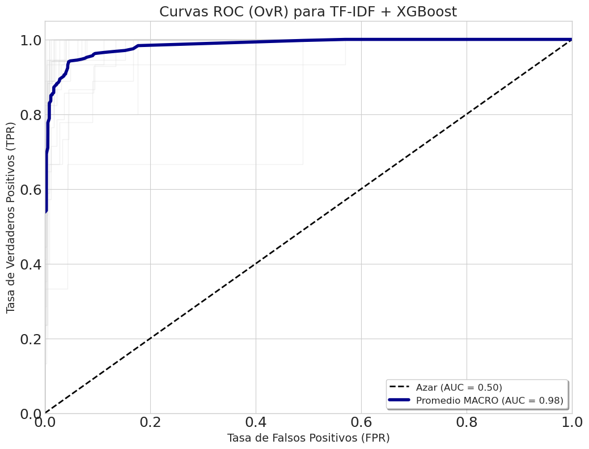
for i in range(num_clases_xgb):
fpr[i], tpr[i], _ = roc_curve(y_true_binarized_xgb[:, i], y_pred_probs_xgb[:, i])
roc_auc[i] = auc(fpr[i], tpr[i])
plt.figure(figsize=(18, 12))
colors = itertools.cycle(plt.cm.get_cmap('tab20c').colors)
plt.style.use('seaborn-v0_8-whitegrid')
plt.plot([0, 1], [0, 1], 'k--', lw=2, label='Azar (AUC = 0.50)')
for i, color in zip(range(num_clases_xgb), colors):
try:
label_text = categorias[i]
except (NameError, IndexError):
label_text = f'Clase {i}'
plt.plot(fpr[i], tpr[i], color=color, lw=2,
label=f'{label_text} (AUC = {roc_auc[i]:.2f})')
plt.xlim([0.0, 1.0])
plt.ylim([0.0, 1.05])
plt.xlabel('Tasa de Falsos Positivos (FPR)', fontsize=14)
plt.ylabel('Tasa de Verdaderos Positivos (TPR)', fontsize=14)
plt.title('Curvas ROC Multiclase por Categoría (OvR)', fontsize=18)
plt.legend(loc="lower right", fontsize=9, ncol=2)
plt.grid(True)
plt.savefig('curva_roc_indvidual_xgb.png', bbox_inches='tight')
plt.show()
/tmp/ipykernel_544/2800992008.py:7: MatplotlibDeprecationWarning: The get_cmap function was deprecated in Matplotlib 3.7 and will be removed in 3.11. Use ``matplotlib.colormaps[name]`` or ``matplotlib.colormaps.get_cmap()`` or ``pyplot.get_cmap()`` instead.
colors = itertools.cycle(plt.cm.get_cmap('tab20c').colors)
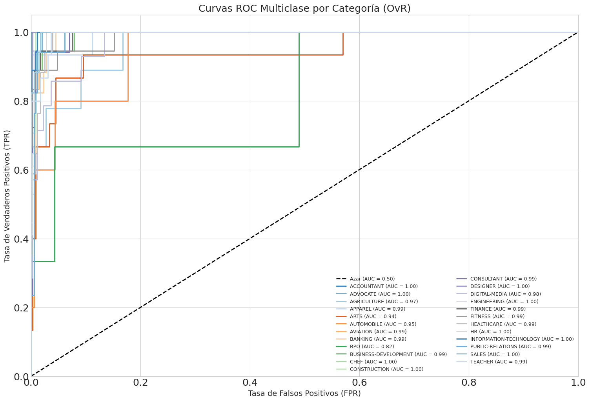
La curva ROC AUC promedio de 0.98 indica que el modelo tiene una capacidad sobresaliente para distinguir entre las distintas clases. Analizando cada categoría individualmente, la mayoría alcanzó valores de AUC muy altos, entre 0.94 y 1, lo que refleja una gran confianza en las predicciones. Por su parte, BPO obtuvo un valor más bajo, 0.82, mostrando que sigue siendo algo complejo para el modelo.
xgb_info = {
'model_object': best_model_xgb,
'vectorizer': vectorizer_xgb,
'class_names': categorias,
# Métricas Finales (Con el enfoque Macro)
'metrics_test': {
'Accuracy': accuracy_xgb,
'F1_Macro': f1_macro_xgb,
'Recall_Macro': recall_macro_xgb,
'Precision_Macro': precision_macro_xgb,
'ROC_AUC_Macro': roc_auc_macro_xgb,
},
# Parámetros y Historial
'best_params_used': best_params_xgb,
'training_history_last_run': callback_metrics.history,
'predictions_test': {
'y_pred_test': y_pred_xgb.tolist(),
'y_proba_test': y_pred_probs_xgb.tolist(),
'y_true_test': y_true_xgb.tolist(),
},
}
file_name = 'xgb_info.pkl'
try:
with open(file_name, 'wb') as file:
pickle.dump(xgb_info, file)
except Exception as e:
print(f"Ocurrió un error al guardar el archivo: {e}")
FastText#
DATA_DIR = "../data"
EMB_PATH = "../docs/cc.en.300.vec"
BASE_DIR = "../fasttext_run"
os.makedirs(BASE_DIR, exist_ok=True)
train_txt_fasttext = os.path.join(BASE_DIR, "fasttext_train.txt")
val_txt_fasttext = os.path.join(BASE_DIR, "fasttext_val.txt")
test_txt_fasttext = os.path.join(BASE_DIR, "fasttext_test.txt")
model_bin_fasttext = os.path.join(BASE_DIR, "fasttext_model.bin")
fasttext_text_col = "Resume"
fasttext_label_col = "Category"
def fasttext_export_txt(df, text_col, label_col, filepath):
with open(filepath, "w", encoding="utf-8") as f:
for text, label in zip(df[text_col], df[label_col]):
text = str(text).replace("\n", " ").replace("\t", " ").strip()
if text:
f.write(f"__label__{label} {text}\n")
fasttext_export_txt(train_df, fasttext_text_col, fasttext_label_col, train_txt_fasttext)
fasttext_export_txt(val_df, fasttext_text_col, fasttext_label_col, val_txt_fasttext)
fasttext_export_txt(test_df, fasttext_text_col, fasttext_label_col, test_txt_fasttext)
start_time = time.time()
try:
fasttext_model = fasttext.train_supervised(
input=train_txt_fasttext,
pretrainedVectors=EMB_PATH,
dim=300,
epoch=25,
lr=0.5,
wordNgrams=2,
loss='softmax',
minCount=1,
bucket=2000000,
minn=0,
maxn=0,
thread=8,
verbose=2
)
training_time = time.time() - start_time
print(f"\nEntrenamiento completado en {training_time:.1f} s.")
fasttext_model.save_model(model_bin_fasttext)
except Exception as e:
print("Error durante entrenamiento FastText")
traceback.print_exc()
Read 1M words
Number of words: 31589
Number of labels: 24
Progress: 100.0% words/sec/thread: 400977 lr: 0.000000 avg.loss: 0.434879 ETA: 0h 0m 0s 21.3% words/sec/thread: 355769 lr: 0.393581 avg.loss: 1.636965 ETA: 0h 0m21s
Entrenamiento completado en 186.2 s.
fasttext_texts_test = test_df[fasttext_text_col].astype(str).tolist()
fasttext_labels_true = test_df[fasttext_label_col].astype(str).tolist()
# Obtener todas las etiquetas posibles del modelo
labels_all = fasttext_model.get_labels()
labels_all = [lbl.replace("__label__", "") for lbl in labels_all]
# Predecir probabilidades
fasttext_preds = [fasttext_model.predict(t, k=len(labels_all)) for t in fasttext_texts_test]
# Extraer las probabilidades y etiquetas
probs = [dict(zip([lbl.replace("__label__", "") for lbl in p[0]], p[1])) for p in fasttext_preds]
# Convertir a matriz de probabilidades (una columna por etiqueta)
probs_matrix = np.array([[p.get(lbl, 0.0) for lbl in labels_all] for p in probs])
# Convertir las etiquetas verdaderas a formato binario (one-vs-rest)
from sklearn.preprocessing import label_binarize
y_true_bin = label_binarize(fasttext_labels_true, classes=labels_all)
# Calcular métricas
fasttext_labels_pred = [max(p, key=p.get) for p in probs] # predicción más probable
accuracy_macro_fasttext = accuracy_score(fasttext_labels_true, fasttext_labels_pred)
precision_macro_fasttext = precision_score(fasttext_labels_true, fasttext_labels_pred, average='macro', zero_division=0)
recall_macro_fasttext = recall_score(fasttext_labels_true, fasttext_labels_pred, average='macro', zero_division=0)
f1_macro_fasttext = f1_score(fasttext_labels_true, fasttext_labels_pred, average='macro', zero_division=0)
# AUC macro
roc_auc_macro_fasttext = roc_auc_score(y_true_bin, probs_matrix, average='macro', multi_class='ovr')
# Guardar resultados
fasttext_results = {
'Accuracy': accuracy_macro_fasttext,
'Precision (Macro)': precision_macro_fasttext,
'Recall (Macro)': recall_macro_fasttext,
'F1-Score (Macro)': f1_macro_fasttext,
'ROC AUC (Macro)': roc_auc_macro_fasttext
}
resultados['FastText'] = fasttext_results
df_results_fasttext = pd.DataFrame.from_dict(resultados, orient='index')
df_results_fasttext.index.name = 'Modelo'
display(pd.DataFrame([fasttext_results], index=['FastText']))
| Accuracy | Precision (Macro) | Recall (Macro) | F1-Score (Macro) | ROC AUC (Macro) | |
|---|---|---|---|---|---|
| FastText | 0.672922 | 0.646081 | 0.63239 | 0.63148 | 0.953611 |
El modelo FastText tuvo un desempeño aceptable en la prueba, con una accuracy de 0.6729. Su F1-Score macro de 0.6314 indica que, aunque logra un equilibrio entre precisión y recall, todavía presenta dificultades para clasificar correctamente algunas categorías. Aun así, su ROC AUC macro de 0.9536 muestra que, en general, el modelo puede diferenciar bien entre las clases.
cm_fasttext = confusion_matrix(fasttext_labels_true, fasttext_labels_pred)
plt.figure(figsize=(15, 12))
sns.heatmap(
cm_fasttext,
annot=True,
fmt='d',
cmap='Blues',
cbar=False
)
try:
plt.xticks(ticks=np.arange(len(categorias)) + 0.5,
labels=categorias, rotation=90)
plt.yticks(ticks=np.arange(len(categorias)) + 0.5,
labels=categorias, rotation=0)
except NameError:
pass
plt.xlabel("Etiquetas Predichas", fontsize=12)
plt.ylabel("Etiquetas Verdaderas", fontsize=12)
plt.title("Matriz de Confusión (FastText)", fontsize=16)
plt.savefig(os.path.join(BASE_DIR, "cm_fasttext_conteo.png"), bbox_inches='tight')
plt.show()
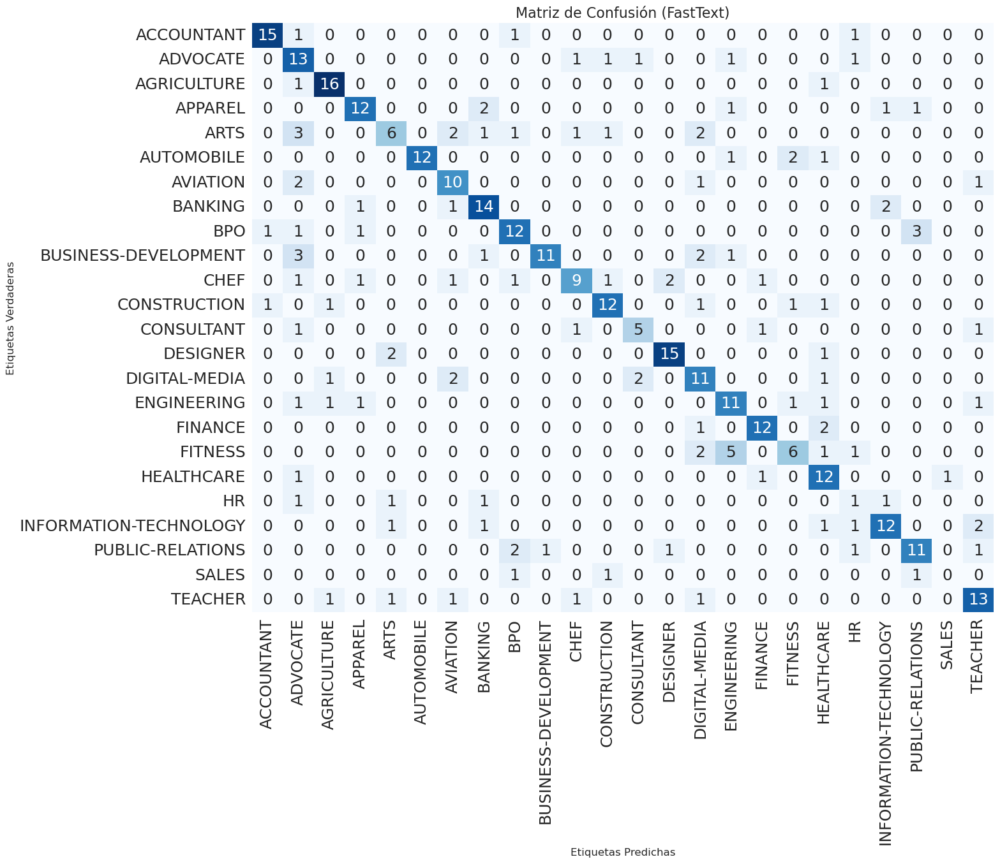
cm_normalizada_fasttext = cm_fasttext.astype('float') / cm_fasttext.sum(axis=1)[:, np.newaxis]
cm_normalizada_fasttext = np.nan_to_num(cm_normalizada_fasttext)
plt.figure(figsize=(15, 12))
sns.heatmap(
cm_normalizada_fasttext,
annot=True,
fmt=".0%",
cmap="Blues",
cbar=True,
linewidths=.5,
linecolor='gray',
annot_kws={"size":10}
)
try:
plt.xticks(ticks=np.arange(len(categorias)) + 0.5,
labels=categorias, rotation=90)
plt.yticks(ticks=np.arange(len(categorias)) + 0.5,
labels=categorias, rotation=0)
except NameError:
pass
plt.xlabel("Etiquetas Predichas", fontsize=12)
plt.ylabel("Etiquetas Verdaderas", fontsize=12)
plt.title("Matriz de Confusión Normalizada (FastText)", fontsize=16)
plt.savefig(os.path.join(BASE_DIR, "cm_fasttext_normalizada.png"), bbox_inches='tight')
plt.show()
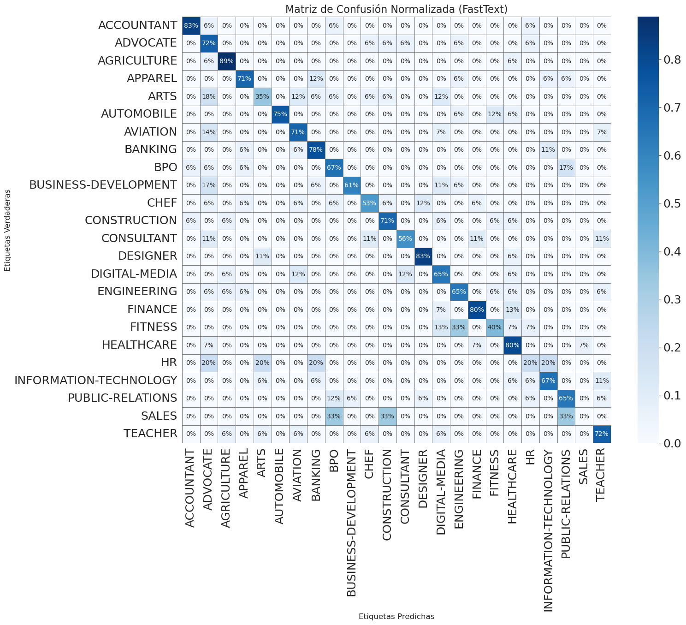
A partir de las matrices de confusión del modelo FastText, se nota que tuvo un rendimiento desigual. De las 24 categorías, 18 superaron el 60% de aciertos, y 5 lograron más del 80%. La categoría Sales no tuvo aciertos (0%). También se observan algunas categorías con valores bajos, alrededor del 20%, lo que muestra que el modelo tuvo problemas para predecir correctamente ciertas clases.
fpr = dict()
tpr = dict()
roc_auc = dict()
for i in range(num_clases):
fpr[i], tpr[i], _ = roc_curve(y_true_bin[:, i], probs_matrix[:, i])
roc_auc[i] = auc(fpr[i], tpr[i])
all_fpr = np.unique(np.concatenate([fpr[i] for i in range(num_clases)]))
mean_tpr = np.zeros_like(all_fpr)
for i in range(num_clases):
mean_tpr += np.interp(all_fpr, fpr[i], tpr[i])
mean_tpr /= num_clases
fpr["macro"] = all_fpr
tpr["macro"] = mean_tpr
roc_auc["macro"] = auc(fpr["macro"], tpr["macro"])
plt.style.use('seaborn-v0_8-whitegrid')
plt.figure(figsize=(12, 9))
# Curvas individuales en gris
for i in range(num_clases):
plt.plot(fpr[i], tpr[i], color='lightgray', alpha=0.3, lw=1)
# Línea de azar
plt.plot([0, 1], [0, 1], 'k--', lw=2, label='Azar (AUC = 0.50)')
# Curva promedio
plt.plot(
fpr["macro"], tpr["macro"],
label=f'Promedio MACRO (AUC = {roc_auc["macro"]:.2f})',
color='darkblue', linestyle='-', linewidth=4
)
plt.xlim([0.0, 1.0])
plt.ylim([0.0, 1.05])
plt.xlabel('Tasa de Falsos Positivos (FPR)', fontsize=14)
plt.ylabel('Tasa de Verdaderos Positivos (TPR)', fontsize=14)
plt.title('Curva ROC Promedio (MACRO) — FastText', fontsize=18)
plt.legend(loc="lower right", fontsize=12, frameon=True, shadow=True)
plt.grid(True)
plt.savefig('curva_roc_general_fasttext.png', bbox_inches='tight')
plt.show()
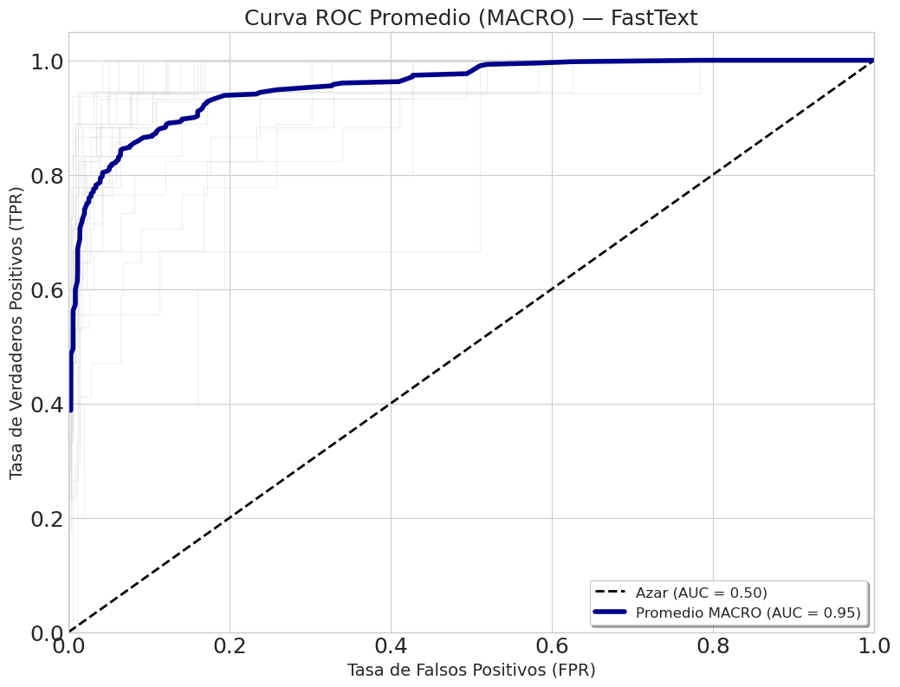
plt.figure(figsize=(18, 12))
plt.style.use('seaborn-v0_8-whitegrid')
# Línea de azar
plt.plot([0, 1], [0, 1], 'k--', lw=2, label='Azar (AUC = 0.50)')
colors = itertools.cycle(plt.cm.get_cmap('tab20c').colors)
for i, color in zip(range(num_clases), colors):
label_text = labels_all[i] if i < len(labels_all) else f'Clase {i}'
if len(label_text) > 25: # si el nombre es muy largo, se trunca
label_text = label_text[:25] + "..."
plt.plot(fpr[i], tpr[i], color=color, lw=2,
label=f'{label_text} (AUC = {roc_auc[i]:.2f})')
plt.xlim([0.0, 1.0])
plt.ylim([0.0, 1.05])
plt.xlabel('Tasa de Falsos Positivos (FPR)', fontsize=14)
plt.ylabel('Tasa de Verdaderos Positivos (TPR)', fontsize=14)
plt.title('Curvas ROC Multiclase por Categoría (OvR) — FastText', fontsize=18)
plt.legend(loc="lower right", fontsize=9, ncol=2)
plt.grid(True)
plt.savefig('curva_roc_individual_fasttext.png', bbox_inches='tight')
plt.show()
/tmp/ipykernel_627/3329604492.py:7: MatplotlibDeprecationWarning: The get_cmap function was deprecated in Matplotlib 3.7 and will be removed in 3.11. Use ``matplotlib.colormaps[name]`` or ``matplotlib.colormaps.get_cmap()`` or ``pyplot.get_cmap()`` instead.
colors = itertools.cycle(plt.cm.get_cmap('tab20c').colors)
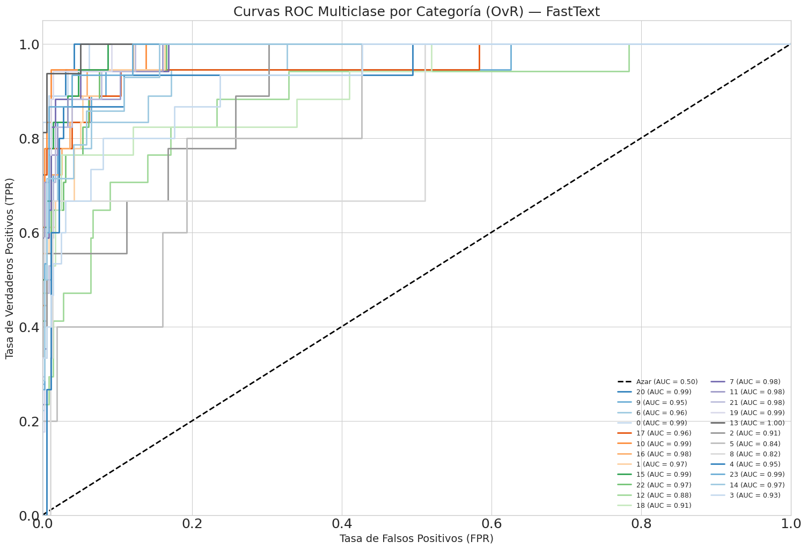
La curva ROC AUC promedio de 0.95 muestra que el modelo tiene buena capacidad para diferenciar entre las distintas clases. Analizando cada categoría de manera individual, la mayoría logró valores de AUC superiores a 0.9, mientras que el rango completo va de 0.82 a 1, lo que indica que, aunque la mayoría de las predicciones son bastante confiables.
fasttext_info = {
"model_path": model_bin_fasttext,
"metrics_test": {
"Accuracy": accuracy_macro_fasttext,
"Precision (Macro)": precision_macro_fasttext,
"Recall (Macro)": recall_macro_fasttext,
"F1-Score (Macro)": f1_macro_fasttext,
"ROC AUC (Macro)": roc_auc_macro_fasttext
},
"labels": {
"y_true": fasttext_labels_true,
"y_pred": fasttext_labels_pred
}
}
summary_path = os.path.join(BASE_DIR, "fasttext_summary.pkl")
with open(summary_path, "wb") as f:
pickle.dump(fasttext_info, f)